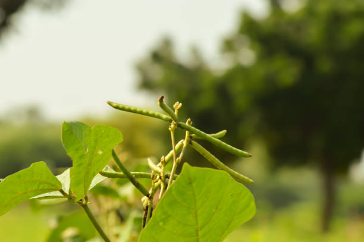

<html lang="en">

</html>

<head>
    <meta charset="UTF-8">
    <meta name="Generator" content="EditPlus®">
    <meta name="Author" content="">
    <meta name="Keywords" content="">
    <meta name="Description" content="">
    <meta name="viewport" content="width=device-width, initial-scale=1.0">
    <title>AD-GROWN</title>
    <style>
        @media (min-width: 1000px) {
            #a {
                display: flex;
            }

            .b {
                width: 280%;
            }

            .c {
                width: 180%;
            }
        }


        /* Style the container for the Google Translate Element */
        #google_translate_element_container {
            position: fixed;
            bottom: 10px;
            right: 10px;
            z-index: 9999;
            transition: box-shadow 0.3s ease;
            /* Add transition for a smoother effect */
        }

        /* Style the Google Translate Element */
        #google_translate_element {
            border: 1px solid rgba(255, 174, 0);
            /* Cyan border color */
            padding: 10px;
            background-color: #f0f8ff;
            /* AliceBlue background color */
            border-radius: 5px;
            box-shadow: 0 0 10px rgba(255, 174, 0);
            /* Initial box-shadow */
        }

        /* Add box-shadow when hovering over the container */
        #google_translate_element_container:hover {
            box-shadow: 0 0 5px rgb(255, 174, 0),
                0 0 25px rgb(255, 174, 0),
                0 0 50px rgb(255, 174, 0);
        }

        @media (max-width: 460px) {
            #imgX {
                height: 200px;
                width: 300px;
            }

        }
    </style>
    <script type="text/javascript"
        src="https://translate.google.com/translate_a/element.js?cb=googleTranslateElementInit"></script>
    <script type="text/javascript">
        function googleTranslateElementInit() {
            new google.translate.TranslateElement({ pageLanguage: 'tel', layout: google.translate.TranslateElement.InlineLayout }, 'google_translate_element');
        }
    </script>
</head>

<body>
    <div id="google_translate_element_container">
        <div id="google_translate_element"></div>
    </div>
    <!--మొక్కజొన్న అని కూడా పిలువబడే మొక్కజొన్న, ప్రపంచంలోని అనేక ప్రాంతాలలో ప్రధానమైన పంట.  మొక్కజొన్న యొక్క పెరుగుతున్న విధానం నాటడం నుండి కోత వరకు అనేక దశలను కలిగి ఉంటుంది.  మొక్కజొన్న సాగు విధానం యొక్క సంక్షిప్త అవలోకనం ఇక్కడ ఉంది:

 నేల తయారీ: 6.0-7.5 pHతో బాగా ఎండిపోయిన నేలలో మొక్కజొన్న బాగా పెరుగుతుంది.  మట్టిని 6-8 అంగుళాల లోతు వరకు దున్నాలి మరియు ఏవైనా కలుపు మొక్కలు లేదా రాళ్లను తొలగించాలి.

 నాటడం: మొక్కజొన్న సాధారణంగా వసంతకాలంలో పండిస్తారు, మంచు ప్రమాదం దాటిన తర్వాత.  విత్తనాలను 1-2 అంగుళాల లోతులో, 30-36 అంగుళాల దూరంలో ఉన్న వరుసలలో నాటాలి.

 అంకురోత్పత్తి: మొక్కజొన్న విత్తనాలు 7-10 రోజులలో మొలకెత్తుతాయి, నేల తేమగా మరియు ఉష్ణోగ్రత తగినంతగా ఉంటే.  విత్తనం ఒక చిన్న రూట్ మరియు రెమ్మను పంపుతుంది, ఇది చివరికి మొక్కజొన్న మొక్కగా పెరుగుతుంది.

 పెరుగుదల: మొక్కజొన్న మొక్క పెరుగుతూనే ఉంటుంది, ఆకులు మరియు కాండాలను అభివృద్ధి చేస్తుంది.  ఇది కూడా tassels మరియు చెవులు ఉత్పత్తి ప్రారంభమవుతుంది.

 పరాగసంపర్కం: మొక్క పైభాగంలో ఉన్న టాసెల్స్‌లో మగ పువ్వులు ఉంటాయి, చెవుల్లో ఆడ పువ్వులు ఉంటాయి.  టసెల్స్ నుండి పుప్పొడి చెవుల పట్టుపై పడినప్పుడు పరాగసంపర్కం జరుగుతుంది.

 చెవి అభివృద్ధి: చెవులు పరాగసంపర్కం జరిగిన తర్వాత, అవి కెర్నలు అభివృద్ధి చెందడం ప్రారంభిస్తాయి.  ప్రతి కెర్నల్ ఒక పట్టుకు జోడించబడి ఉంటుంది, ఇది చివరికి ఎండిపోయి పడిపోతుంది.

 హార్వెస్టింగ్: మొక్కజొన్న సాధారణంగా శరదృతువులో పండిస్తారు, చెవులు పూర్తిగా పరిపక్వం చెందినప్పుడు మరియు కాండాలు మరియు ఆకులు గోధుమ రంగులోకి మారుతాయి.  చెవులను చేతితో లేదా యాంత్రిక హార్వెస్టర్ ఉపయోగించి పండిస్తారు.

 మొత్తంమీద, మొక్కజొన్న సాగు విధానంలో జాగ్రత్తగా నేల తయారీ, సరైన సమయంలో నాటడం మరియు అంకురోత్పత్తి, పెరుగుదల, పరాగసంపర్కం మరియు చెవి అభివృద్ధికి సరైన పరిస్థితులను నిర్ధారించడం వంటివి ఉంటాయి.
jowar
జొన్న అని కూడా పిలువబడే జొన్న, దాని ధాన్యాల కోసం విస్తృతంగా పండించే తృణధాన్యాల పంట. జోవర్ పెరుగుదల ప్రక్రియను అనేక దశలుగా విభజించవచ్చు:

విత్తన ఎంపిక మరియు నాటడం: చేతితో లేదా మెకానికల్ ప్లాంటర్‌ని ఉపయోగించి నాటడానికి అధిక-నాణ్యత గల విత్తనాలను ఎంపిక చేస్తారు. విత్తనాలు బాగా తయారుచేసిన నేలలో, సాధారణంగా వరుసలలో పండిస్తారు.

అంకురోత్పత్తి మరియు మొలక దశ: నాటిన తరువాత, జొన్న గింజలు మొలకెత్తుతాయి మరియు మొలకలుగా పెరుగుతాయి. ఈ దశలో, బలమైన రూట్ వ్యవస్థను ఏర్పాటు చేయడానికి మరియు ఆరోగ్యకరమైన ఆకులను అభివృద్ధి చేయడానికి మొలకలకు తగినంత తేమ, వెచ్చదనం మరియు పోషకాలు అవసరం.

ఏపుగా పెరగడం: జొన్న మొక్కలు మంచి రూట్ వ్యవస్థను ఏర్పాటు చేసుకున్న తర్వాత, అవి ఏపుగా పెరగడంపై దృష్టి పెడతాయి. మొక్కలు పెద్దవిగా పెరుగుతాయి మరియు కిరణజన్య సంయోగక్రియ మరియు ధాన్యం ఉత్పత్తికి ముఖ్యమైన ఆకులు మరియు కొమ్మలను అభివృద్ధి చేస్తాయి. మొక్కలు ఆరోగ్యకరమైన పెరుగుదలను ప్రోత్సహించడానికి క్రమం తప్పకుండా నీటిపారుదల మరియు ఫలదీకరణం చేయబడతాయి.

పుష్పించే మరియు ధాన్యం ఏర్పడటం: దాదాపు 45-60 రోజుల పెరుగుదల తర్వాత, జొన్న మొక్కలు పుష్పాలను ఉత్పత్తి చేయడం ప్రారంభిస్తాయి. పువ్వులు గాలి లేదా స్వీయ-పరాగసంపర్కం ద్వారా పరాగసంపర్కం చేయబడతాయి. పరాగసంపర్కం తరువాత, పువ్వులు ధాన్యాలుగా అభివృద్ధి చెందుతాయి, ఇవి స్పైక్ లాంటి పానికిల్‌లో ఉంటాయి.

ధాన్యం పరిపక్వత మరియు హార్వెస్టింగ్: ధాన్యాలు పరిపక్వం చెందడానికి దాదాపు 90-120 రోజులు పడుతుంది, ఈ సమయంలో పానికిల్ లోపల ధాన్యాలు పెరుగుతాయి మరియు అభివృద్ధి చెందుతాయి. పానికిల్స్ ఆకుపచ్చ నుండి గోధుమ రంగులోకి మారుతాయి, అవి పూర్తిగా పరిపక్వం చెందాయని సూచిస్తున్నాయి. జొన్నను సాధారణంగా మొక్క నుండి కాయలను కత్తిరించి వాటిని నూర్పిడి చేయడం ద్వారా ధాన్యాలను మొక్కల పదార్థం నుండి వేరు చేయడం ద్వారా పండిస్తారు.

పంటకోత తర్వాత ప్రాసెసింగ్: పంట కోసిన తర్వాత, ధాన్యాలను శుభ్రం చేసి, ఏదైనా చెత్త లేదా దెబ్బతిన్న గింజలను తొలగించడానికి క్రమబద్ధీకరించబడతాయి. ధాన్యాలను ఆహారం, పశుగ్రాసం లేదా జీవ ఇంధన ఉత్పత్తికి ఉపయోగించవచ్చు.

మొత్తంమీద, జోవర్ యొక్క పెరుగుదల ఉష్ణోగ్రత, తేమ మరియు సూర్యకాంతి వంటి పర్యావరణ కారకాల సంక్లిష్ట పరస్పర చర్యను కలిగి ఉంటుంది, అలాగే మొక్క యొక్క పెరుగుదల మరియు అభివృద్ధిని నిర్ణయించే జన్యుపరమైన కారకాలు. ఆరోగ్యకరమైన మరియు ఉత్పాదక పంటను నిర్ధారించడానికి తగినంత నీటి నిర్వహణ, పోషకాల నిర్వహణ మరియు తెగులు నియంత్రణ చాలా ముఖ్యమైనవి.
సొర్గుమ్ 
పెడి 
చిల్లి 
మేజ్ -->
    <CENTER>
        <H1><strong>1. MOONG / 1.ਮੂੰਗ</strong></H1>
    </CENTER>
    <center>
        
    </center>

    <DIV id="a" style="color:blue;justify-content:space-evenly;">
        <CENTER>
            <h2 class="notranslate" style="border:3px solid orange; color:BLACK;">
                <CENTER>
                    <h3>ENGLISH</h3>
                </CENTER>
                Moong, also known as green gram, is a popular legume in India, valued for its nutritional benefits and
                short growing cycle. Here’s a detailed step-by-step mechanism for growing moong from seed selection to
                harvesting:<br><br>
                1] <U> Seed Selection and Sowing:</U> <br>
                Begin by selecting high-quality moong seeds that are disease-resistant and certified. Moong is typically
                sown in the kharif season (June to July) or rabi season (November to December) in India. Seeds should be
                sown 1-2 inches deep in well-prepared, well-drained soil, with rows spaced about 30 cm apart.<br><br>
                2] <U> Germination:</U> <br>
                Once planted, the seeds absorb moisture from the soil, triggering germination. The radicle emerges
                first, followed by the shoot. Optimal soil temperature for germination is between 20°C to 25°C.
                Germination takes about 3-5 days under favorable conditions.<br><br>
                3] <U> Vegetative Growth: </U> <br>
                After germination, the plant enters a vegetative growth phase, where leaves and stems develop. Moong
                plants typically grow to a height of 30-60 cm. During this stage, adequate sunlight and water are
                crucial for robust growth, as the plant establishes its root system and foliage.<br><br>
                4] <U> Flowering:</U> <br>
                Around 30-40 days after sowing, moong plants begin to flower. The flowers are small, yellow, and usually
                grow in clusters. This is a critical stage, as successful pollination leads to pod formation. Moong
                plants are predominantly self-pollinating, requiring minimal external intervention.<br><br>
                5] <U> Pod Formation: </U> <br>
                Following successful pollination, the flowers develop into pods. Each pod typically contains 1-3 seeds.
                Pod formation occurs about 50-60 days after sowing. During this period, maintaining adequate moisture
                levels is essential to support seed development.<br><br>
                6] <U> Pest and Disease Management: </U> <br>
                Moong is susceptible to pests like aphids, thrips, and diseases such as root rot and downy mildew.
                Regular monitoring and integrated pest management strategies should be employed. Neem oil or
                insecticidal soaps can be used to control pests, while crop rotation and resistant varieties can help
                manage diseases.<br><br>
                7] <U> Seed Development: </U> <br>
                As the pods mature, the seeds within grow and harden. This stage lasts for about 15-20 days, during
                which water requirements decrease significantly. The plant starts to yellow, indicating that the seeds
                are nearing maturity.<br><br>
                8] <U> Harvesting: </U> <br>
                Moong is typically ready for harvest 70-90 days after sowing when the pods turn brown and the seeds are
                firm. Harvesting can be done manually by cutting the plants at the base or by using sickles. It’s
                important to harvest at the right time to avoid shattering of pods.<br><br>
                9] <U> Post-Harvest Processing: </U> <br>
                After harvesting, the plants are laid out to dry in the sun for a few days. Threshing is then performed
                to separate the seeds from the pods. The seeds are cleaned and sorted to remove any debris or damaged
                seeds.<br><br>
                10] <U> Pest Control in Storage: </U> <br>
                To protect stored moong seeds from pests like weevils and grain borers, ensure proper storage in
                airtight containers or bags. It’s advisable to use natural repellents like dried neem leaves in storage
                areas to deter pests.<br><br>
                Throughout its growth cycle, moong is a fast-growing legume that requires moderate water, well-drained
                soil, and effective pest management to yield a healthy harvest.
            </h2>
        </CENTER>

        <div class="c" id="translateThisSection" style="color:blACK; text-align:center;">
            <center>
                <h3 style="border:3px solid orange; color:BLACK;">
                    <CENTER>
                        <h1>ਪੰਜਾਬੀ</h1>
                    </CENTER>
                    ਮੂੰਗ, ਜਿਸ ਨੂੰ ਹਰੇ ਚਨੇ ਵਜੋਂ ਵੀ ਜਾਣਿਆ ਜਾਂਦਾ ਹੈ, ਭਾਰਤ ਵਿੱਚ ਇੱਕ ਪ੍ਰਸਿੱਧ ਫਲ਼ੀ ਹੈ, ਜੋ ਇਸਦੇ ਪੌਸ਼ਟਿਕ ਲਾਭਾਂ
                    ਅਤੇ ਛੋਟੇ ਵਧਣ ਦੇ ਚੱਕਰ ਲਈ ਮਹੱਤਵਪੂਰਣ ਹੈ। ਇੱਥੇ ਬੀਜ ਦੀ ਚੋਣ ਤੋਂ ਲੈ ਕੇ ਵਾਢੀ ਤੱਕ ਮੂੰਗ ਉਗਾਉਣ ਲਈ ਇੱਕ ਵਿਸਤ੍ਰਿਤ
                    ਕਦਮ-ਦਰ-ਕਦਮ ਵਿਧੀਹੈ:<br><br>
                    1] <U>ਬੀਜ ਦੀ ਚੋਣ ਅਤੇ ਬਿਜਾਈ: </U> <br>ਉੱਚ-ਗੁਣਵੱਤਾ ਵਾਲੇ ਮੂੰਗ ਦੇ ਬੀਜਾਂ ਦੀ ਚੋਣ ਕਰਕੇ ਸ਼ੁਰੂਆਤ ਕਰੋ ਜੋ
                    ਰੋਗ-ਰੋਧਕ ਅਤੇ ਪ੍ਰਮਾਣਿਤ ਹਨ। ਮੂੰਗੀ ਆਮ ਤੌਰ 'ਤੇ ਭਾਰਤ ਵਿੱਚ ਸਾਉਣੀ ਦੇ ਸੀਜ਼ਨ (ਜੂਨ ਤੋਂ ਜੁਲਾਈ) ਜਾਂ ਹਾੜ੍ਹੀ ਦੇ
                    ਸੀਜ਼ਨ (ਨਵੰਬਰ ਤੋਂ ਦਸੰਬਰ) ਵਿੱਚ ਬੀਜੀ ਜਾਂਦੀ ਹੈ। ਬੀਜ ਚੰਗੀ ਤਰ੍ਹਾਂ ਤਿਆਰ, ਚੰਗੀ ਨਿਕਾਸ ਵਾਲੀ ਮਿੱਟੀ ਵਿੱਚ 1-2 ਇੰ
                    ਡੂੰਘੇ ਬੀਜੇ ਜਾਣੇ ਚਾਹੀਦੇ ਹਨ, ਕਤਾਰਾਂ ਵਿੱਚ ਲਗਭਗ 30 ਸੈਂਟੀਮੀਟਰ ਦੀ ਦੂਰੀ ਰੱਖੀ ਜਾਂਦੀ ਹੈ।<br><br>
                    2] <U>ਉਗਣਾ: </U> <br>ਇੱਕ ਵਾਰ ਬੀਜਣ ਤੋਂ ਬਾਅਦ, ਬੀਜ ਮਿੱਟੀ ਤੋਂ ਨਮੀ ਨੂੰ ਜਜ਼ਬ ਕਰ ਲੈਂਦੇ ਹਨ, ਜਿਸ ਨਾਲ ਉਗਣਾ
                    ਸ਼ੁਰੂ ਹੋ ਜਾਂਦਾ ਹੈ। ਰੈਡੀਕਲ ਪਹਿਲਾਂ ਉਭਰਦਾ ਹੈ, ਉਸ ਤੋਂ ਬਾਅਦ ਸ਼ੂਟ ਹੁੰਦਾ ਹੈ। ਉਗਣ ਲਈ ਸਰਵੋਤਮ ਮਿੱਟੀ ਦਾ ਤਾਪਮਾਨ
                    20°C ਤੋਂ 25°C ਦੇ ਵਿਚਕਾਰ ਹੈ। ਅਨੁਕੂਲ ਹਾਲਤਾਂ ਵਿੱਚ ਉਗਣ ਵਿੱਚ ਲਗਭਗ 3-5 ਦਿਨ ਲੱਗਦੇ ਹਨ।<br><br>
                    3] <U>ਬਨਸਪਤੀ ਵਿਕਾਸ: </U> <br>ਉਗਣ ਤੋਂ ਬਾਅਦ, ਪੌਦਾ ਬਨਸਪਤੀ ਵਿਕਾਸ ਦੇ ਪੜਾਅ ਵਿੱਚ ਦਾਖਲ ਹੁੰਦਾ ਹੈ, ਜਿੱਥੇ ਪੱਤੇ
                    ਅਤੇ ਤਣੇ ਵਿਕਸਿਤ ਹੁੰਦੇ ਹਨ। ਮੂੰਗ ਦੇ ਪੌਦੇ ਆਮ ਤੌਰ 'ਤੇ 30-60 ਸੈਂਟੀਮੀਟਰ ਦੀ ਉਚਾਈ ਤੱਕ ਵਧਦੇ ਹਨ। ਇਸ ਪੜਾਅ ਦੇ
                    ਦੌਰਾਨ, ਮਜ਼ਬੂਤ ​​​​ਵਿਕਾਸ ਲਈ ਲੋੜੀਂਦੀ ਸੂਰਜ ਦੀ ਰੌਸ਼ਨੀ ਅਤੇ ਪਾਣੀ ਮਹੱਤਵਪੂਰਨ ਹਨ, ਕਿਉਂਕਿ ਪੌਦਾ ਆਪਣੀ ਜੜ੍ਹ
                    ਪ੍ਰਣਾਲੀ ਅਤੇ ਪੱਤਿਆਂ ਨੂੰ ਸਥਾਪਿਤ ਕਰਦਾ ਹੈ।<br><br>
                    4] <U> ਫੁੱਲ: </U> <br>ਬਿਜਾਈ ਤੋਂ ਲਗਭਗ 30-40 ਦਿਨਾਂ ਬਾਅਦ, ਮੂੰਗੀ ਦੇ ਪੌਦੇ ਫੁੱਲ ਆਉਣੇ ਸ਼ੁਰੂ ਹੋ ਜਾਂਦੇ ਹਨ।
                    ਫੁੱਲ ਛੋਟੇ, ਪੀਲੇ ਹੁੰਦੇ ਹਨ ਅਤੇ ਆਮ ਤੌਰ 'ਤੇ ਗੁੱਛਿਆਂ ਵਿੱਚ ਵਧਦੇ ਹਨ। ਇਹ ਇੱਕ ਨਾਜ਼ੁਕ ਪੜਾਅ ਹੈ, ਕਿਉਂਕਿ ਸਫਲ
                    ਪਰਾਗੀਕਰਨ ਫਲੀ ਦੇ ਗਠਨ ਵੱਲ ਲੈ ਜਾਂਦਾ ਹੈ। ਮੂੰਗ ਦੇ ਪੌਦੇ ਮੁੱਖ ਤੌਰ 'ਤੇ ਸਵੈ-ਪਰਾਗਿਤ ਹੁੰਦੇ ਹਨ, ਜਿਨ੍ਹਾਂ ਨੂੰ
                    ਘੱਟੋ-ਘੱਟ ਬਾਹਰੀ ਦਖਲ ਦੀ ਲੋੜ ਹੁੰਦੀ ਹੈ।<br><br>
                    5] <U> ਫਲੀ ਦਾ ਗਠਨ: </U> <br>ਸਫਲ ਪਰਾਗਣ ਦੇ ਬਾਅਦ, ਫੁੱਲ ਫਲੀਆਂ ਵਿੱਚ ਵਿਕਸਿਤ ਹੋ ਜਾਂਦੇ ਹਨ। ਹਰੇਕ ਫਲੀ ਵਿੱਚ ਆਮ
                    ਤੌਰ 'ਤੇ 1-3 ਬੀਜ ਹੁੰਦੇ ਹਨ। ਬਿਜਾਈ ਤੋਂ ਲਗਭਗ 50-60 ਦਿਨਾਂ ਬਾਅਦ ਫਲੀ ਬਣ ਜਾਂਦੀ ਹੈ। ਇਸ ਮਿਆਦ ਦੇ ਦੌਰਾਨ, ਬੀਜ ਦੇ
                    ਵਿਕਾਸ ਨੂੰ ਸਮਰਥਨ ਦੇਣ ਲਈ ਲੋੜੀਂਦੀ ਨਮੀ ਦੇ ਪੱਧਰ ਨੂੰ ਬਣਾਈ ਰੱਖਣਾ ਜ਼ਰੂਰੀ ਹੈ।<br><br>
                    6] <U>ਕੀੜੇ ਅਤੇ ਰੋਗ ਪ੍ਰਬੰਧਨ: </U> <br>ਮੂੰਗ ਕੀੜਿਆਂ ਜਿਵੇਂ ਕਿ ਐਫੀਡਜ਼, ਥ੍ਰਿਪਸ, ਅਤੇ ਜੜ੍ਹਾਂ ਦੀ ਸੜਨ ਅਤੇ
                    ਡਾਊਨੀ ਫ਼ਫ਼ੂੰਦੀ ਵਰਗੀਆਂ ਬਿਮਾਰੀਆਂ ਲਈ ਸੰਵੇਦਨਸ਼ੀਲ ਹੈ। ਨਿਯਮਤ ਨਿਗਰਾਨੀ ਅਤੇ ਏਕੀਕ੍ਰਿਤ ਕੀਟ ਪ੍ਰਬੰਧਨ ਰਣਨੀਤੀਆਂ ਨੂੰ
                    ਨਿਯੁਕਤ ਕੀਤਾ ਜਾਣਾ ਚਾਹੀਦਾ ਹੈ। ਨਿੰਮ ਦੇ ਤੇਲ ਜਾਂ ਕੀਟਨਾਸ਼ਕ ਸਾਬਣ ਦੀ ਵਰਤੋਂ ਕੀੜਿਆਂ ਨੂੰ ਕੰਟਰੋਲ ਕਰਨ ਲਈ ਕੀਤੀ ਜਾ
                    ਸਕਦੀ ਹੈ, ਜਦੋਂ ਕਿ ਫਸਲੀ ਚੱਕਰ ਅਤੇ ਰੋਧਕ ਕਿਸਮਾਂ ਬਿਮਾਰੀਆਂ ਦੇ ਪ੍ਰਬੰਧਨ ਵਿੱਚ ਮਦਦ ਕਰ ਸਕਦੀਆਂ ਹਨ।<br><br>
                    7] <U> ਬੀਜ ਵਿਕਾਸ: </U> <br>ਜਿਵੇਂ-ਜਿਵੇਂ ਫਲੀਆਂ ਪੱਕਦੀਆਂ ਹਨ, ਅੰਦਰਲੇ ਬੀਜ ਵਧਦੇ ਹਨ ਅਤੇ ਸਖ਼ਤ ਹੋ ਜਾਂਦੇ ਹਨ। ਇਹ
                    ਅਵਸਥਾ ਲਗਭਗ 15-20 ਦਿਨਾਂ ਤੱਕ ਰਹਿੰਦੀ ਹੈ, ਜਿਸ ਦੌਰਾਨ ਪਾਣੀ ਦੀ ਲੋੜ ਕਾਫ਼ੀ ਘੱਟ ਜਾਂਦੀ ਹੈ। ਪੌਦਾ ਪੀਲਾ ਹੋਣਾ ਸ਼ੁਰੂ
                    ਹੋ ਜਾਂਦਾ ਹੈ, ਇਹ ਦਰਸਾਉਂਦਾ ਹੈ ਕਿ ਬੀਜ ਪੱਕਣ ਦੇ ਨੇੜੇ ਹਨ।<br><br>
                    8] <U>ਵਾਢੀ: </U> <br>ਮੂੰਗੀ ਆਮ ਤੌਰ 'ਤੇ ਬਿਜਾਈ ਤੋਂ 70-90 ਦਿਨਾਂ ਬਾਅਦ ਵਾਢੀ ਲਈ ਤਿਆਰ ਹੁੰਦੀ ਹੈ ਜਦੋਂ ਫਲੀਆਂ
                    ਭੂਰੀਆਂ ਹੋ ਜਾਂਦੀਆਂ ਹਨ ਅਤੇ ਬੀਜ ਪੱਕੇ ਹੁੰਦੇ ਹਨ। ਵਾਢੀ ਹੱਥੀਂ ਬੂਟਿਆਂ ਨੂੰ ਅਧਾਰ 'ਤੇ ਕੱਟ ਕੇ ਜਾਂ ਦਾਤਰੀਆਂ ਦੀ
                    ਵਰਤੋਂ ਕਰਕੇ ਕੀਤੀ ਜਾ ਸਕਦੀ ਹੈ। ਫਲੀਆਂ ਦੇ ਟੁੱਟਣ ਤੋਂ ਬਚਣ ਲਈ ਸਹੀ ਸਮੇਂ 'ਤੇ ਵਾਢੀ ਕਰਨਾ ਮਹੱਤਵਪੂਰਨ ਹੈ।<br><br>
                    9] <U>ਵਾਢੀ ਤੋਂ ਬਾਅਦ ਦੀ ਪ੍ਰਕਿਰਿਆ: </U> <br>ਵਾਢੀ ਤੋਂ ਬਾਅਦ, ਪੌਦਿਆਂ ਨੂੰ ਕੁਝ ਦਿਨਾਂ ਲਈ ਧੁੱਪ ਵਿਚ ਸੁੱਕਣ ਲਈ
                    ਰੱਖਿਆ ਜਾਂਦਾ ਹੈ। ਫਿਰ ਬੀਜਾਂ ਨੂੰ ਫਲੀਆਂ ਤੋਂ ਵੱਖ ਕਰਨ ਲਈ ਥਰੈਸਿੰਗ ਕੀਤੀ ਜਾਂਦੀ ਹੈ। ਕਿਸੇ ਵੀ ਮਲਬੇ ਜਾਂ ਖਰਾਬ
                    ਬੀਜਾਂ ਨੂੰ ਹਟਾਉਣ ਲਈ ਬੀਜਾਂ ਨੂੰ ਸਾਫ਼ ਅਤੇ ਛਾਂਟਿਆ ਜਾਂਦਾ ਹੈ।<br><br>
                    10] <U>ਸਟੋਰੇਜ਼ ਵਿੱਚ ਪੈਸਟ ਕੰਟਰੋਲ: </U> <br>ਸਟੋਰ ਕੀਤੇ ਮੂੰਗੀ ਦੇ ਬੀਜਾਂ ਨੂੰ ਕੀੜਿਆਂ ਜਿਵੇਂ ਕਿ ਵੇਈਲਾਂ ਅਤੇ
                    ਅਨਾਜ ਦੇ ਬੋਰ ਤੋਂ ਬਚਾਉਣ ਲਈ, ਏਅਰਟਾਈਟ ਕੰਟੇਨਰਾਂ ਜਾਂ ਬੋਰੀਆਂ ਵਿੱਚ ਸਹੀ ਸਟੋਰੇਜ ਯਕੀਨੀ ਬਣਾਓ। ਕੀੜਿਆਂ ਤੋਂ ਬਚਣ ਲਈ
                    ਸਟੋਰੇਜ ਖੇਤਰਾਂ ਵਿੱਚ ਸੁੱਕੀਆਂ ਨਿੰਮ ਦੀਆਂ ਪੱਤੀਆਂ ਵਰਗੇ ਕੁਦਰਤੀ ਨਿਰੋਧਕ ਪਦਾਰਥਾਂ ਦੀ ਵਰਤੋਂ ਕਰਨ ਦੀ ਸਲਾਹ ਦਿੱਤੀ
                    ਜਾਂਦੀ ਹੈ।<br><br>

                    ਇਸਦੇ ਪੂਰੇ ਵਿਕਾਸ ਚੱਕਰ ਦੌਰਾਨ, ਮੂੰਗ ਇੱਕ ਤੇਜ਼ੀ ਨਾਲ ਵਧਣ ਵਾਲੀ ਫਲ਼ੀ ਹੈ ਜਿਸ ਨੂੰ ਇੱਕ ਸਿਹਤਮੰਦ ਵਾਢੀ ਪੈਦਾ ਕਰਨ ਲਈ
                    ਮੱਧਮ ਪਾਣੀ, ਚੰਗੀ ਨਿਕਾਸ ਵਾਲੀ ਮਿੱਟੀ ਅਤੇ ਪ੍ਰਭਾਵਸ਼ਾਲੀ ਕੀਟ ਪ੍ਰਬੰਧਨ ਦੀ ਲੋੜ ਹੁੰਦੀ ਹੈ।
                </h3>
            </center>
            <audio controls src="TELANGANA/TP AUDIO\jowar.m4a"></audio>
            <h2>ਸੁਣੋ</h2>
        </div>

    </DIV>

    <CENTER>
        <H1><strong>2. MASOOR / 2.ਦਾਲ</strong></H1>
    </CENTER>
    <center>
        
    </center>

    <DIV id="a" style="color:blue;  justify-content:space-evenly;">
        <CENTER>
            <h2 class="notranslate" style="border:3px solid orange; color:BLACK;">
                <CENTER>
                    <h3>ENGLISH</h3>
                </CENTER>

                Masoor, commonly known as red lentil, is a widely cultivated legume in India, appreciated for its quick
                cooking time and nutritional value. Here’s a detailed step-by-step mechanism for growing masoor from
                seed selection to harvesting:<br><br>
                1] <U>Seed Selection and Sowing:</U> <br>
                Begin by selecting high-quality masoor seeds that are disease-resistant and certified. The optimal
                sowing time is during the rabi season (October to November) in India. Seeds should be sown 1-2 inches
                deep in well-drained, loamy soil, with rows spaced about 30-40 cm apart.<br><br>
                2] <U>Germination:</U> <br>
                After sowing, seeds absorb moisture from the soil, initiating germination. The radicle (root) emerges
                first, followed by the shoot. Germination typically occurs within 7-12 days, with ideal soil
                temperatures between 15°C to 25°C.<br><br>
                3] <U>Vegetative Growth:</U> <br>
                Once germinated, the masoor plant enters the vegetative growth phase. The stem elongates, and compound
                leaves develop. The plants generally grow to about 30-60 cm in height. Adequate sunlight and moderate
                water supply are crucial during this phase for healthy growth.<br><br>
                4] <U>Flowering:</U> <br>
                Approximately 30-40 days after sowing, masoor plants begin to flower. The flowers are typically pink or
                white and grow in clusters. This self-pollinating phase is essential for pod formation, with minimal
                need for external pollination agents.<br><br>
                5] <U>Pod Formation:</U> <br>
                Following pollination, flowers develop into pods, usually containing 1-2 seeds each. Pod formation
                occurs around 60-70 days after sowing. Maintaining moisture during this stage is vital for optimal seed
                development.<br><br>
                6] <U>Pest and Disease Management:</U> <br>
                Masoor is susceptible to pests like aphids and diseases such as root rot and fungal infections.
                Implement integrated pest management strategies, including regular monitoring and the use of organic
                insecticides like neem oil. Crop rotation and resistant varieties can help manage diseases
                effectively.<br><br>
                7] <U>Seed Development:</U> <br>
                As the pods mature, the seeds inside grow and harden. This maturation stage lasts about 15-20 days,
                during which the plants begin to dry out. Reducing water supply at this stage is crucial to prevent
                disease and promote uniform seed maturity.<br><br>
                8] <U>Harvesting:</U> <br>
                Masoor is ready for harvest 90-100 days after sowing, indicated by brown pods and yellowing foliage.
                Harvesting can be done manually by cutting the plants at the base. Timely harvesting is important to
                prevent pod shattering.<br><br>
                9] <U>Post-Harvest Processing:</U> <br>
                After harvesting, the plants should be laid out to dry in the sun for a few days. Threshing is performed
                to separate the seeds from the pods. The seeds are then cleaned and sorted to remove any damaged or
                unripe seeds.<br><br>
                10] <U>Pest Control in Storage:</U> <br>
                To protect stored masoor seeds from pests like weevils, ensure they are stored in airtight containers or
                bags in a cool, dry place. Natural repellents such as dried neem leaves can be added to storage areas to
                deter insects.<br><br>

                Throughout its growth cycle, masoor requires well-drained soil, moderate water, and effective pest
                management to achieve a healthy and productive harvest.
            </h2>
        </CENTER>
        <div class="c" id="translateThisSection" style="color:blACK;   text-align:center;float:right;">
            <center>
                <h3 style="border:3px solid orange; color:BLACK;">
                    <CENTER>
                        <h1>ਪੰਜਾਬੀ</h1>
                    </CENTER>
                    ਮਸੂਰ, ਆਮ ਤੌਰ 'ਤੇ ਲਾਲ ਦਾਲ ਵਜੋਂ ਜਾਣਿਆ ਜਾਂਦਾ ਹੈ, ਭਾਰਤ ਵਿੱਚ ਇੱਕ ਵਿਆਪਕ ਤੌਰ 'ਤੇ ਕਾਸ਼ਤ ਕੀਤੀ ਫਲ਼ੀ ਹੈ, ਜਿਸਦੀ
                    ਜਲਦੀ ਪਕਾਉਣ ਦੇ ਸਮੇਂ ਅਤੇ ਪੌਸ਼ਟਿਕ ਮੁੱਲ ਲਈ ਪ੍ਰਸ਼ੰਸਾ ਕੀਤੀ ਜਾਂਦੀ ਹੈ। ਇੱਥੇ ਬੀਜ ਦੀ ਚੋਣ ਤੋਂ ਲੈ ਕੇ ਕਟਾਈ ਤੱਕ
                    ਮਸੂਰ ਉਗਾਉਣ ਲਈ ਇੱਕ ਵਿਸਤ੍ਰਿਤ ਕਦਮ-ਦਰ-ਕਦਮ ਵਿਧੀ ਹੈ:<br><br>

                    1] <U> ਬੀਜ ਦੀ ਚੋਣ ਅਤੇ ਬਿਜਾਈ: </U> <br>ਉੱਚ-ਗੁਣਵੱਤਾ ਵਾਲੇ ਮਸੂਰ ਦੇ ਬੀਜਾਂ ਦੀ ਚੋਣ ਕਰਕੇ ਸ਼ੁਰੂਆਤ ਕਰੋ ਜੋ
                    ਰੋਗ-ਰੋਧਕ ਅਤੇ ਪ੍ਰਮਾਣਿਤ ਹਨ। ਭਾਰਤ ਵਿੱਚ ਹਾੜ੍ਹੀ ਦੇ ਸੀਜ਼ਨ (ਅਕਤੂਬਰ ਤੋਂ ਨਵੰਬਰ) ਦੌਰਾਨ ਬਿਜਾਈ ਦਾ ਅਨੁਕੂਲ ਸਮਾਂ
                    ਹੈ। ਬੀਜ 1-2 ਇੰਚ ਡੂੰਘਾਈ ਨਾਲ ਨਿਕਾਸ ਵਾਲੀ, ਦੁਮਟੀਆ ਮਿੱਟੀ ਵਿੱਚ ਬੀਜਿਆ ਜਾਣਾ ਚਾਹੀਦਾ ਹੈ, ਕਤਾਰਾਂ ਵਿੱਚ ਲਗਭਗ
                    30-40 ਸੈਂਟੀਮੀਟਰ ਦੀ ਦੂਰੀ ਹੁੰਦੀ ਹੈ।<br><br>

                    2] <U> ਉਗਣਾ: </U> <br>ਬਿਜਾਈ ਤੋਂ ਬਾਅਦ, ਬੀਜ ਮਿੱਟੀ ਤੋਂ ਨਮੀ ਨੂੰ ਜਜ਼ਬ ਕਰ ਲੈਂਦੇ ਹਨ, ਉਗਣਾ ਸ਼ੁਰੂ ਕਰਦੇ ਹਨ।
                    ਰੈਡੀਕਲ (ਜੜ੍ਹ) ਪਹਿਲਾਂ ਉੱਭਰਦਾ ਹੈ, ਉਸ ਤੋਂ ਬਾਅਦ ਸ਼ੂਟ ਹੁੰਦਾ ਹੈ। ਉਗਣਾ ਆਮ ਤੌਰ 'ਤੇ 7-12 ਦਿਨਾਂ ਦੇ ਅੰਦਰ ਹੁੰਦਾ
                    ਹੈ, ਮਿੱਟੀ ਦਾ ਆਦਰਸ਼ ਤਾਪਮਾਨ 15°C ਤੋਂ 25°C ਦੇ ਵਿਚਕਾਰ ਹੁੰਦਾ ਹੈ।<br><br>

                    3] <U> ਬਨਸਪਤੀ ਵਿਕਾਸ: </U> <br>ਇੱਕ ਵਾਰ ਉਗਣ ਤੋਂ ਬਾਅਦ, ਮਸੂਰ ਪੌਦਾ ਬਨਸਪਤੀ ਵਿਕਾਸ ਦੇ ਪੜਾਅ ਵਿੱਚ ਦਾਖਲ ਹੁੰਦਾ
                    ਹੈ। ਤਣਾ ਲੰਮਾ ਹੁੰਦਾ ਹੈ, ਅਤੇ ਮਿਸ਼ਰਿਤ ਪੱਤੇ ਵਿਕਸਿਤ ਹੁੰਦੇ ਹਨ। ਪੌਦੇ ਆਮ ਤੌਰ 'ਤੇ ਲਗਭਗ 30-60 ਸੈਂਟੀਮੀਟਰ ਦੀ
                    ਉਚਾਈ ਤੱਕ ਵਧਦੇ ਹਨ। ਸਿਹਤਮੰਦ ਵਿਕਾਸ ਲਈ ਇਸ ਪੜਾਅ ਦੌਰਾਨ ਲੋੜੀਂਦੀ ਧੁੱਪ ਅਤੇ ਮੱਧਮ ਪਾਣੀ ਦੀ ਸਪਲਾਈ ਮਹੱਤਵਪੂਰਨ
                    ਹੈ।<br><br>

                    4] <U>ਫੁੱਲ: </U> <br>ਬਿਜਾਈ ਤੋਂ ਲਗਭਗ 30-40 ਦਿਨਾਂ ਬਾਅਦ, ਮਸੂਰ ਦੇ ਪੌਦੇ ਫੁੱਲ ਆਉਣੇ ਸ਼ੁਰੂ ਹੋ ਜਾਂਦੇ ਹਨ। ਫੁੱਲ
                    ਆਮ ਤੌਰ 'ਤੇ ਗੁਲਾਬੀ ਜਾਂ ਚਿੱਟੇ ਹੁੰਦੇ ਹਨ ਅਤੇ ਗੁੱਛਿਆਂ ਵਿੱਚ ਵਧਦੇ ਹਨ। ਇਹ ਸਵੈ-ਪਰਾਗਿਤ ਕਰਨ ਵਾਲਾ ਪੜਾਅ ਪੌਡ ਦੇ
                    ਗਠਨ ਲਈ ਜ਼ਰੂਰੀ ਹੈ, ਬਾਹਰੀ ਪਰਾਗਿਤ ਕਰਨ ਵਾਲੇ ਏਜੰਟਾਂ ਦੀ ਘੱਟੋ ਘੱਟ ਲੋੜ ਹੈ।<br><br>

                    5] <U>ਫਲੀ ਦਾ ਗਠਨ: </U> <br>ਪਰਾਗਿਤ ਹੋਣ ਤੋਂ ਬਾਅਦ, ਫੁੱਲ ਫਲੀਆਂ ਵਿੱਚ ਵਿਕਸਤ ਹੁੰਦੇ ਹਨ, ਆਮ ਤੌਰ 'ਤੇ ਹਰੇਕ ਵਿੱਚ
                    1-2 ਬੀਜ ਹੁੰਦੇ ਹਨ। ਬਿਜਾਈ ਤੋਂ ਲਗਭਗ 60-70 ਦਿਨਾਂ ਬਾਅਦ ਫਲੀ ਬਣ ਜਾਂਦੀ ਹੈ। ਸਰਵੋਤਮ ਬੀਜ ਵਿਕਾਸ ਲਈ ਇਸ ਪੜਾਅ ਦੌਰਾਨ
                    ਨਮੀ ਨੂੰ ਬਣਾਈ ਰੱਖਣਾ ਬਹੁਤ ਜ਼ਰੂਰੀ ਹੈ।<br><br>

                    6] <U>ਕੀੜੇ ਅਤੇ ਰੋਗ ਪ੍ਰਬੰਧਨ: </U> <br>ਮਸੂਰ ਐਫਿਡ ਵਰਗੇ ਕੀੜਿਆਂ ਅਤੇ ਜੜ੍ਹਾਂ ਦੇ ਸੜਨ ਅਤੇ ਫੰਗਲ ਇਨਫੈਕਸ਼ਨ
                    ਵਰਗੀਆਂ ਬਿਮਾਰੀਆਂ ਲਈ ਸੰਵੇਦਨਸ਼ੀਲ ਹੈ। ਏਕੀਕ੍ਰਿਤ ਕੀਟ ਪ੍ਰਬੰਧਨ ਰਣਨੀਤੀਆਂ ਨੂੰ ਲਾਗੂ ਕਰੋ, ਜਿਸ ਵਿੱਚ ਨਿਯਮਤ ਨਿਗਰਾਨੀ
                    ਅਤੇ ਨਿੰਮ ਦੇ ਤੇਲ ਵਰਗੇ ਜੈਵਿਕ ਕੀਟਨਾਸ਼ਕਾਂ ਦੀ ਵਰਤੋਂ ਸ਼ਾਮਲ ਹੈ। ਫਸਲੀ ਰੋਟੇਸ਼ਨ ਅਤੇ ਰੋਧਕ ਕਿਸਮਾਂ ਬਿਮਾਰੀਆਂ ਦਾ
                    ਪ੍ਰਭਾਵਸ਼ਾਲੀ ਢੰਗ ਨਾਲ ਪ੍ਰਬੰਧਨ ਕਰਨ ਵਿੱਚ ਮਦਦ ਕਰ ਸਕਦੀਆਂ ਹਨ।<br><br>

                    7] <U>ਬੀਜ ਵਿਕਾਸ: </U> <br>ਜਿਵੇਂ-ਜਿਵੇਂ ਫਲੀਆਂ ਪੱਕਦੀਆਂ ਹਨ, ਅੰਦਰਲੇ ਬੀਜ ਵਧਦੇ ਹਨ ਅਤੇ ਸਖ਼ਤ ਹੋ ਜਾਂਦੇ ਹਨ। ਇਹ
                    ਪੱਕਣ ਦਾ ਪੜਾਅ ਲਗਭਗ 15-20 ਦਿਨ ਰਹਿੰਦਾ ਹੈ, ਜਿਸ ਦੌਰਾਨ ਪੌਦੇ ਸੁੱਕਣੇ ਸ਼ੁਰੂ ਹੋ ਜਾਂਦੇ ਹਨ। ਇਸ ਪੜਾਅ 'ਤੇ ਪਾਣੀ ਦੀ
                    ਸਪਲਾਈ ਨੂੰ ਘਟਾਉਣਾ ਬਿਮਾਰੀ ਨੂੰ ਰੋਕਣ ਅਤੇ ਇਕਸਾਰ ਬੀਜ ਪਰਿਪੱਕਤਾ ਨੂੰ ਉਤਸ਼ਾਹਿਤ ਕਰਨ ਲਈ ਮਹੱਤਵਪੂਰਨ ਹੈ।
                    <br><br>

                    8] <U>ਵਾਢੀ: </U> <br>ਮਸੂਰ ਬਿਜਾਈ ਤੋਂ 90-100 ਦਿਨਾਂ ਬਾਅਦ ਵਾਢੀ ਲਈ ਤਿਆਰ ਹੋ ਜਾਂਦਾ ਹੈ, ਜਿਸ ਨੂੰ ਭੂਰੇ ਰੰਗ
                    ਦੀਆਂ ਫਲੀਆਂ ਅਤੇ ਪੀਲੇ ਪੱਤਿਆਂ ਦੁਆਰਾ ਦਰਸਾਇਆ ਜਾਂਦਾ ਹੈ। ਪੌਦਿਆਂ ਨੂੰ ਅਧਾਰ 'ਤੇ ਕੱਟ ਕੇ ਕਟਾਈ ਹੱਥੀਂ ਕੀਤੀ ਜਾ ਸਕਦੀ
                    ਹੈ। ਫਲੀ ਦੇ ਟੁੱਟਣ ਨੂੰ ਰੋਕਣ ਲਈ ਸਮੇਂ ਸਿਰ ਕਟਾਈ ਮਹੱਤਵਪੂਰਨ ਹੈ।<br><br>

                    9] <U>ਵਾਢੀ ਤੋਂ ਬਾਅਦ ਦੀ ਪ੍ਰਕਿਰਿਆ: </U> <br>ਕਟਾਈ ਤੋਂ ਬਾਅਦ, ਪੌਦਿਆਂ ਨੂੰ ਕੁਝ ਦਿਨਾਂ ਲਈ ਧੁੱਪ ਵਿਚ ਸੁੱਕਣ ਲਈ
                    ਰੱਖਿਆ ਜਾਣਾ ਚਾਹੀਦਾ ਹੈ। ਫਲੀਆਂ ਤੋਂ ਬੀਜਾਂ ਨੂੰ ਵੱਖ ਕਰਨ ਲਈ ਥਰੈਸਿੰਗ ਕੀਤੀ ਜਾਂਦੀ ਹੈ। ਫਿਰ ਬੀਜਾਂ ਨੂੰ ਸਾਫ਼ ਕੀਤਾ
                    ਜਾਂਦਾ ਹੈ ਅਤੇ ਕਿਸੇ ਵੀ ਖਰਾਬ ਜਾਂ ਕੱਚੇ ਬੀਜ ਨੂੰ ਹਟਾਉਣ ਲਈ ਛਾਂਟਿਆ ਜਾਂਦਾ ਹੈ।
                    <br><br>

                    10]<U>ਸਟੋਰੇਜ਼ ਵਿੱਚ ਪੈਸਟ ਕੰਟਰੋਲ: </U> <br>ਸਟੋਰ ਕੀਤੇ ਮਸੂਰ ਦੇ ਬੀਜਾਂ ਨੂੰ ਵੇਈਲਾਂ ਵਰਗੇ ਕੀੜਿਆਂ ਤੋਂ ਬਚਾਉਣ
                    ਲਈ, ਇਹ ਸੁਨਿਸ਼ਚਿਤ ਕਰੋ ਕਿ ਉਹਨਾਂ ਨੂੰ ਠੰਢੇ, ਸੁੱਕੇ ਸਥਾਨ 'ਤੇ ਏਅਰਟਾਈਟ ਕੰਟੇਨਰਾਂ ਜਾਂ ਬੈਗਾਂ ਵਿੱਚ ਸਟੋਰ ਕੀਤਾ ਗਿਆ
                    ਹੈ। ਕੀੜੇ-ਮਕੌੜਿਆਂ ਨੂੰ ਰੋਕਣ ਲਈ ਸੁੱਕੀਆਂ ਨਿੰਮ ਦੀਆਂ ਪੱਤੀਆਂ ਵਰਗੇ ਕੁਦਰਤੀ ਭੜਕਾਉਣ ਵਾਲੇ ਪਦਾਰਥਾਂ ਨੂੰ ਸਟੋਰੇਜ
                    ਖੇਤਰਾਂ ਵਿੱਚ ਜੋੜਿਆ ਜਾ ਸਕਦਾ ਹੈ।<br><br>

                    ਆਪਣੇ ਵਿਕਾਸ ਦੇ ਪੂਰੇ ਚੱਕਰ ਦੌਰਾਨ, ਮਸੂਰ ਨੂੰ ਸਿਹਤਮੰਦ ਅਤੇ ਲਾਭਕਾਰੀ ਵਾਢੀ ਪ੍ਰਾਪਤ ਕਰਨ ਲਈ ਚੰਗੀ ਤਰ੍ਹਾਂ ਨਿਕਾਸ
                    ਵਾਲੀ ਮਿੱਟੀ, ਮੱਧਮ ਪਾਣੀ ਅਤੇ ਪ੍ਰਭਾਵਸ਼ਾਲੀ ਕੀਟ ਪ੍ਰਬੰਧਨ ਦੀ ਲੋੜ ਹੁੰਦੀ ਹੈ।

                </h3>
            </center>
            <audio controls src="TELANGANA/TP AUDIO\paddy.m4a"></audio>
            <h2>ਸੁਣੋ</h2>
        </div>

    </DIV>

    <CENTER>
        <H1><strong>3. GRAM / 3.ਗ੍ਰਾਮ</strong></H1>
    </CENTER>
    <center>
        
    </center>
    <DIV id="a" style="color:blue; justify-content:space-evenly;">
        <CENTER>
            <h2 class="notranslate" style="border:3px solid orange; color:BLACK;">
                <CENTER>
                    <h3>ENGLISH</h3>
                </CENTER>
                Chickpeas, known as gram or chana, are a vital legume in Indian agriculture, valued for their
                nutritional benefits and adaptability. Here’s a detailed step-by-step mechanism of their growth from
                seed selection to harvesting:<br><br>

                1] <U>Seed Selection and Sowing:</U> <br>Select high-quality, disease-resistant seeds. Treat seeds with
                fungicides to minimize soil-borne diseases.Sow seeds in late October to early November, depending on the
                region.Plant seeds 1.5 to 2 inches deep in well-drained, loamy soil, spaced 30-35 cm apart in
                rows.<br><br>


                2] <U>Germination:</U> <br>
                After sowing, seeds absorb moisture and begin germinating.The radicle (embryonic root) emerges first,
                followed by the shoot.Germination occurs best at soil temperatures between 10°C to 15°C, taking about 7
                to 10 days.<br><br>


                3] <U>Vegetative Growth:</U> <br>
                The chickpea plant develops deep roots and erect stems with compound leaves.This stage lasts about 30-40
                days, with the plant growing 30-60 cm tall.Nitrogen-fixing nodules form on the roots, enhancing soil
                fertility.<br><br>


                4] <U>Branching and Flowering:</U><br>
                Around 40-45 days post-sowing, branching begins.Small white or pink flowers develop shortly after, with
                self-pollination occurring within the flowers.Increased branching leads to more flowers and
                pods.<br><br>


                5] <U>Pod Formation:</U> <br>
                Pods begin forming 60-70 days after sowing, each containing 1-2 seeds.Adequate water is crucial during
                this phase, though chickpeas are moderately drought-tolerant.<br><br>

                6] <U>Pest and Disease Management:</U><br>
                Monitor for pests like pod borers and diseases such as wilt.Use neem-based bio-pesticides or chemical
                treatments as needed.Crop rotation with cereals helps prevent diseases.<br><br>

                7] <U>Seed Development:</U><br>
                As pods mature, seeds grow and harden over 20-30 days.The plants start drying, indicating seed
                maturation.<br><br>

                8] <U>Harvesting:</U><br>
                Harvest when the plants are brown and pods are fully dried, typically 100-110 days
                post-sowing.Harvest manually by cutting or pulling plants, then leave them to dry in the sun.<br><br>

                9] <U>Post-Harvest Processing:</U><br>
                After threshing, clean and dry seeds to prevent moisture absorption.Store seeds in cool, dry conditions
                to maintain quality.<br><br>

                10] <U>Pest Control in Storage:</U><br>
                Ensure storage facilities are well-ventilated and treat with pesticides or fumigants. - Regularly
                inspect stored seeds for insect infestations, particularly weevils.<br><br>

                Throughout the growth process, chickpeas thrive in well-drained soil and require careful management of
                water and pests to maximize yield.


            </h2>
        </CENTER>
        <div class="c" id="translateThisSection" style="color:blACK;   text-align:center;float:right;">
            <center>
                <h3 style="border:3px solid orange; color:BLACK;">
                    <CENTER>
                        <h1>ਪੰਜਾਬੀ</h1>
                    </CENTER>
                    ਛੋਲੇ, ਛੋਲੇ ਜਾਂ ਚਨੇ ਵਜੋਂ ਜਾਣੇ ਜਾਂਦੇ ਹਨ, ਭਾਰਤੀ ਖੇਤੀਬਾੜੀ ਵਿੱਚ ਇੱਕ ਮਹੱਤਵਪੂਰਨ ਫਲ਼ੀਦਾਰ ਹਨ, ਜੋ ਉਹਨਾਂ ਦੇ
                    ਪੌਸ਼ਟਿਕ ਲਾਭਾਂ ਅਤੇ ਅਨੁਕੂਲਤਾ ਲਈ ਮਹੱਤਵਪੂਰਣ ਹਨ। ਇੱਥੇ ਬੀਜ ਦੀ ਚੋਣ ਤੋਂ ਲੈ ਕੇ ਕਟਾਈ ਤੱਕ ਉਹਨਾਂ ਦੇ ਵਾਧੇ ਦਾ ਇੱਕ
                    ਵਿਸਤ੍ਰਿਤ ਕਦਮ-ਦਰ-ਕਦਮ ਵਿਧੀ ਹੈ:<br><br>
                    1] <U>ਬੀਜ ਦੀ ਚੋਣ ਅਤੇ ਬਿਜਾਈ: </U> <br>ਉੱਚ ਗੁਣਵੱਤਾ ਵਾਲੇ, ਰੋਗ-ਰੋਧਕ ਬੀਜ ਚੁਣੋ। ਮਿੱਟੀ ਤੋਂ ਪੈਦਾ ਹੋਣ ਵਾਲੀਆਂ
                    ਬਿਮਾਰੀਆਂ ਨੂੰ ਘੱਟ ਕਰਨ ਲਈ ਬੀਜਾਂ ਦਾ ਉੱਲੀਨਾਸ਼ਕਾਂ ਨਾਲ ਇਲਾਜ ਕਰੋ। ਖੇਤਰ ਦੇ ਆਧਾਰ 'ਤੇ ਅਕਤੂਬਰ ਦੇ ਅਖੀਰ ਤੋਂ ਨਵੰਬਰ
                    ਦੇ ਸ਼ੁਰੂ ਵਿੱਚ ਬੀਜ ਬੀਜੋ। ਬੀਜ 1.5 ਤੋਂ 2 ਇੰਚ ਡੂੰਘੇ ਨਿਕਾਸ ਵਾਲੀ, ਚਿਕਨਾਈ ਵਾਲੀ ਮਿੱਟੀ ਵਿੱਚ, ਕਤਾਰਾਂ ਵਿੱਚ
                    30-35 ਸੈਂਟੀਮੀਟਰ ਦੀ ਦੂਰੀ 'ਤੇ ਲਗਾਓ।<br><br>

                    2] <U> ਉਗਣਾ: </U> <br>ਬਿਜਾਈ ਤੋਂ ਬਾਅਦ, ਬੀਜ ਨਮੀ ਨੂੰ ਜਜ਼ਬ ਕਰ ਲੈਂਦੇ ਹਨ ਅਤੇ ਉਗਣਾ ਸ਼ੁਰੂ ਕਰਦੇ ਹਨ। ਰੇਡੀਕਲ
                    (ਭਰੂਣ ਜੜ੍ਹ) ਪਹਿਲਾਂ ਉੱਭਰਦੀ ਹੈ, ਉਸ ਤੋਂ ਬਾਅਦ ਸ਼ੂਟ ਹੁੰਦੀ ਹੈ। ਉਗਣਾ 10 ਡਿਗਰੀ ਸੈਲਸੀਅਸ ਤੋਂ 15 ਡਿਗਰੀ ਸੈਲਸੀਅਸ
                    ਦੇ ਵਿਚਕਾਰ ਮਿੱਟੀ ਦੇ ਤਾਪਮਾਨ 'ਤੇ ਸਭ ਤੋਂ ਵਧੀਆ ਹੁੰਦਾ ਹੈ, ਲਗਭਗ 7 ਤੋਂ 10 ਦਿਨ ਲੱਗਦੇ ਹਨ।<br><br>

                    3] <U>ਬਨਸਪਤੀ ਵਿਕਾਸ: </U> <br>ਛੋਲੇ ਦਾ ਬੂਟਾ ਮਿਸ਼ਰਿਤ ਪੱਤਿਆਂ ਨਾਲ ਡੂੰਘੀਆਂ ਜੜ੍ਹਾਂ ਅਤੇ ਤਣੇ ਦਾ ਵਿਕਾਸ ਕਰਦਾ
                    ਹੈ। ਇਹ ਪੜਾਅ ਲਗਭਗ 30-40 ਦਿਨਾਂ ਤੱਕ ਰਹਿੰਦਾ ਹੈ, ਜਿਸ ਨਾਲ ਪੌਦਾ 30-60 ਸੈਂਟੀਮੀਟਰ ਉੱਚਾ ਹੁੰਦਾ ਹੈ। ਜੜ੍ਹਾਂ 'ਤੇ
                    ਨਾਈਟ੍ਰੋਜਨ-ਫਿਕਸਿੰਗ ਨੋਡਿਊਲ ਬਣਦੇ ਹਨ, ਮਿੱਟੀ ਦੀ ਉਪਜਾਊ ਸ਼ਕਤੀ ਵਧਾਉਂਦੇ ਹਨ।<br><br>

                    4] <U>ਸ਼ਾਖਾਵਾਂ ਅਤੇ ਫੁੱਲ: </U> <br>ਬਿਜਾਈ ਤੋਂ ਬਾਅਦ ਲਗਭਗ 40-45 ਦਿਨਾਂ ਬਾਅਦ, ਸ਼ਾਖਾਵਾਂ ਬਣਨੀਆਂ ਸ਼ੁਰੂ ਹੋ
                    ਜਾਂਦੀਆਂ ਹਨ। ਛੋਟੇ ਚਿੱਟੇ ਜਾਂ ਗੁਲਾਬੀ ਫੁੱਲ ਜਲਦੀ ਹੀ ਵਿਕਸਿਤ ਹੋ ਜਾਂਦੇ ਹਨ, ਫੁੱਲਾਂ ਦੇ ਅੰਦਰ ਸਵੈ-ਪਰਾਗੀਕਰਨ ਹੁੰਦਾ
                    ਹੈ। ਸ਼ਾਖਾਵਾਂ ਵਧਣ ਨਾਲ ਵਧੇਰੇ ਫੁੱਲ ਅਤੇ ਫਲੀਆਂ ਨਿਕਲਦੀਆਂ ਹਨ।<br><br>

                    5] <U>ਫਲੀ ਦਾ ਗਠਨ: </U> <br>ਬਿਜਾਈ ਤੋਂ 60-70 ਦਿਨਾਂ ਬਾਅਦ ਫਲੀਆਂ ਬਣਨੀਆਂ ਸ਼ੁਰੂ ਹੋ ਜਾਂਦੀਆਂ ਹਨ, ਹਰ ਇੱਕ ਵਿੱਚ
                    1-2 ਬੀਜ ਹੁੰਦੇ ਹਨ। ਇਸ ਪੜਾਅ ਦੇ ਦੌਰਾਨ ਲੋੜੀਂਦਾ ਪਾਣੀ ਬਹੁਤ ਜ਼ਰੂਰੀ ਹੁੰਦਾ ਹੈ, ਹਾਲਾਂਕਿ ਛੋਲੇ ਮੱਧਮ ਤੌਰ 'ਤੇ
                    ਸੋਕਾ-ਸਹਿਣਸ਼ੀਲ ਹੁੰਦੇ ਹਨ।<br><br>

                    6] <U>ਕੀੜੇ ਅਤੇ ਰੋਗ ਪ੍ਰਬੰਧਨ: </U> <br>ਕੀੜਿਆਂ ਜਿਵੇਂ ਕਿ ਪੌਡ ਬੋਰਰ ਅਤੇ ਵਿਲਟ ਵਰਗੀਆਂ ਬਿਮਾਰੀਆਂ ਦੀ ਨਿਗਰਾਨੀ
                    ਕਰੋ। ਲੋੜ ਅਨੁਸਾਰ ਨਿੰਮ-ਆਧਾਰਿਤ ਬਾਇਓ-ਕੀਟਨਾਸ਼ਕਾਂ ਜਾਂ ਰਸਾਇਣਕ ਉਪਚਾਰਾਂ ਦੀ ਵਰਤੋਂ ਕਰੋ। ਅਨਾਜ ਦੇ ਨਾਲ ਫਸਲ ਨੂੰ
                    ਘੁੰਮਾਉਣ ਨਾਲ ਬਿਮਾਰੀਆਂ ਨੂੰ ਰੋਕਣ ਵਿੱਚ ਮਦਦ ਮਿਲਦੀ ਹੈ।<br><br>

                    7] <U>ਬੀਜ ਵਿਕਾਸ: </U> <br>ਜਿਵੇਂ-ਜਿਵੇਂ ਫਲੀਆਂ ਪੱਕਦੀਆਂ ਹਨ, ਬੀਜ 20-30 ਦਿਨਾਂ ਵਿੱਚ ਵਧਦੇ ਅਤੇ ਸਖ਼ਤ ਹੋ ਜਾਂਦੇ
                    ਹਨ। ਪੌਦੇ ਸੁੱਕਣੇ ਸ਼ੁਰੂ ਹੋ ਜਾਂਦੇ ਹਨ, ਜੋ ਕਿ ਬੀਜ ਦੀ ਪਰਿਪੱਕਤਾ ਨੂੰ ਦਰਸਾਉਂਦਾ ਹੈ।<br><br>

                    8] <U> ਵਾਢੀ: </U> <br>ਵਾਢੀ ਉਦੋਂ ਕਰੋ ਜਦੋਂ ਪੌਦੇ ਭੂਰੇ ਹੋਣ ਅਤੇ ਫਲੀਆਂ ਪੂਰੀ ਤਰ੍ਹਾਂ ਸੁੱਕ ਜਾਣ, ਆਮ ਤੌਰ 'ਤੇ
                    ਬਿਜਾਈ ਤੋਂ ਬਾਅਦ 100-110 ਦਿਨਾਂ ਬਾਅਦ। ਪੌਦਿਆਂ ਨੂੰ ਕੱਟ ਕੇ ਜਾਂ ਖਿੱਚ ਕੇ ਹੱਥੀਂ ਵਾਢੀ ਕਰੋ, ਫਿਰ ਉਨ੍ਹਾਂ ਨੂੰ ਧੁੱਪ
                    ਵਿਚ ਸੁੱਕਣ ਲਈ ਛੱਡ ਦਿਓ।<br><br>

                    9] <U>ਵਾਢੀ ਤੋਂ ਬਾਅਦ ਦੀ ਪ੍ਰਕਿਰਿਆ: </U> <br>ਥਰੈਸਿੰਗ ਤੋਂ ਬਾਅਦ, ਨਮੀ ਨੂੰ ਜਜ਼ਬ ਕਰਨ ਤੋਂ ਰੋਕਣ ਲਈ ਬੀਜਾਂ ਨੂੰ
                    ਸਾਫ਼ ਅਤੇ ਸੁੱਕਾ ਕਰੋ। ਗੁਣਵੱਤਾ ਬਰਕਰਾਰ ਰੱਖਣ ਲਈ ਬੀਜਾਂ ਨੂੰ ਠੰਡੇ, ਸੁੱਕੇ ਹਾਲਾਤਾਂ ਵਿੱਚ ਸਟੋਰ ਕਰੋ। <br><br>

                    10] <U>ਸਟੋਰੇਜ਼ ਵਿੱਚ ਪੈਸਟ ਕੰਟਰੋਲ: </U> <br>ਯਕੀਨੀ ਬਣਾਓ ਕਿ ਸਟੋਰੇਜ ਦੀਆਂ ਸਹੂਲਤਾਂ ਚੰਗੀ ਤਰ੍ਹਾਂ ਹਵਾਦਾਰ ਹਨ
                    ਅਤੇ ਕੀਟਨਾਸ਼ਕਾਂ ਜਾਂ ਫਿਊਮੀਗੈਂਟਸ ਨਾਲ ਇਲਾਜ ਕਰੋ। - ਕੀੜੇ-ਮਕੌੜਿਆਂ ਦੇ ਸੰਕਰਮਣ ਲਈ ਸਟੋਰ ਕੀਤੇ ਬੀਜਾਂ ਦਾ ਨਿਯਮਿਤ
                    ਤੌਰ 'ਤੇ ਮੁਆਇਨਾ ਕਰੋ, ਖਾਸ ਤੌਰ 'ਤੇ ਵੀਵਲ।<br><br>

                    ਵਿਕਾਸ ਪ੍ਰਕਿਰਿਆ ਦੇ ਦੌਰਾਨ, ਛੋਲੇ ਚੰਗੀ ਤਰ੍ਹਾਂ ਨਿਕਾਸ ਵਾਲੀ ਮਿੱਟੀ ਵਿੱਚ ਉੱਗਦੇ ਹਨ ਅਤੇ ਵੱਧ ਤੋਂ ਵੱਧ ਝਾੜ ਲਈ ਪਾਣੀ
                    ਅਤੇ ਕੀੜਿਆਂ ਦੇ ਧਿਆਨ ਨਾਲ ਪ੍ਰਬੰਧਨ ਦੀ ਲੋੜ ਹੁੰਦੀ ਹੈ।
                </h3>
            </center>
            <audio controls src="TELANGANA/TP AUDIO\cotton.m4a"></audio>
            <h2>ਸੁਣੋ</h2>
        </div>


    </DIV>

    <CENTER>
        <H1><strong>4. ARHAR / 4.ਅਰਹਰ</strong></H1>
    </CENTER>
    <center>
        
    </center>

    <DIV id="a" style="color:blue;  justify-content:space-evenly;">
        <CENTER>
            <h2 class="notranslate" style="border:3px solid orange; color:BLACK;">
                <CENTER>
                    <h3>ENGLISH</h3>
                </CENTER>
                Arhar, also known as pigeon pea or toor dal, is an important pulse crop in India, valued for its protein
                content and adaptability to various climatic conditions. Here’s a detailed step-by-step mechanism for
                growing arhar from seed selection to harvesting:<br><br>
                1] <U>Seed Selection and Sowing:</U> <br>
                Select high-quality arhar seeds that are disease-resistant and certified. The best time to sow arhar is
                during the kharif season (June to July) or in the rabi season (October to November) depending on the
                region. Seeds should be sown 2-4 inches deep in well-drained, fertile soil, with rows spaced 60-75 cm
                apart to allow for adequate growth.<br><br>
                2] <U>Germination:</U> <br>
                After sowing, seeds absorb moisture from the soil, leading to germination. The radicle (root) emerges
                first, followed by the shoot. Germination typically occurs within 7-10 days under optimal conditions,
                with soil temperatures between 20°C to 30°C being ideal.<br><br>
                3] <U>Vegetative Growth:</U> <br>
                Once germinated, the arhar plant enters a vegetative phase, developing stems and leaves. The plant can
                grow up to 1-2 meters tall, with compound leaves that provide ample surface area for photosynthesis.
                Adequate sunlight and moisture are crucial for strong vegetative growth.<br><br>
                4] <U>Flowering:</U> <br>
                Around 60-70 days after sowing, arhar plants begin to flower. The flowers are yellow and typically
                appear in clusters. This phase is vital for pod formation, as arhar is predominantly self-pollinated,
                minimizing reliance on external pollinators.<br><br>
                5] <U>Pod Formation:</U> <br>
                After flowering, the pods develop, each containing 2-5 seeds. Pod formation occurs approximately 70-90
                days after sowing. During this stage, maintaining proper moisture levels is essential for seed
                development and pod health.<br><br>
                6] <U>Pest and Disease Management:</U> <br>
                Arhar is susceptible to pests like pod borers, aphids, and diseases such as wilt and root rot. Implement
                integrated pest management strategies, including crop rotation, the use of resistant varieties, and the
                application of organic pesticides like neem oil to control infestations.<br><br>
                7] <U>Seed Development:</U> <br>
                As the pods mature, the seeds grow and harden. This maturation process lasts about 20-30 days. The
                plants will start to dry out, and the pods will change color, signaling that the seeds are nearing
                readiness for harvest.<br><br>
                8] <U>Harvesting:</U> <br>
                Arhar is ready for harvest 120-150 days after sowing when the pods are dry and brown, and the seeds
                inside are firm. Harvesting can be done manually by cutting the plants at the base or by pulling them
                out of the soil. It’s crucial to harvest at the right time to avoid pod shattering.<br><br>
                9] <U>Post-Harvest Processing:</U> <br>
                After harvesting, the plants should be laid out in the sun for a few days to dry completely. Threshing
                is then performed to separate the seeds from the pods. The seeds are cleaned, sorted, and any damaged
                seeds are removed.<br><br>
                10] <U>Pest Control in Storage:</U> <br>
                To protect stored arhar seeds from pests like weevils, ensure they are stored in airtight containers or
                bags in a cool, dry place. Adding natural repellents such as dried neem leaves can help deter pests in
                storage.<br><br>
                Throughout its growth cycle, arhar requires well-drained soil, moderate water, and effective pest
                management to ensure a healthy and productive harvest.


            </h2>
        </CENTER>

        <div class="c" id="translateThisSection" style="color:blACK;   text-align:center;float:right;">
            <center>
                <h3 style="border:3px solid orange; color:BLACK;">
                    <CENTER>
                        <h1>ਪੰਜਾਬੀ</h1>
                    </CENTER>
                    ਅਰਹਰ, ਜਿਸਨੂੰ ਕਬੂਤਰ ਮਟਰ ਜਾਂ ਤੂਰ ਦੀ ਦਾਲ ਵੀ ਕਿਹਾ ਜਾਂਦਾ ਹੈ, ਭਾਰਤ ਵਿੱਚ ਇੱਕ ਮਹੱਤਵਪੂਰਨ ਦਾਲਾਂ ਦੀ ਫਸਲ ਹੈ,
                    ਜਿਸਦੀ ਪ੍ਰੋਟੀਨ ਸਮੱਗਰੀ ਅਤੇ ਵੱਖ-ਵੱਖ ਮੌਸਮੀ ਸਥਿਤੀਆਂ ਵਿੱਚ ਅਨੁਕੂਲਤਾ ਲਈ ਕੀਮਤੀ ਹੈ। ਬੀਜ ਦੀ ਚੋਣ ਤੋਂ ਲੈ ਕੇ ਵਾਢੀ
                    ਤੱਕ ਅਰਹਰ ਨੂੰ ਉਗਾਉਣ ਲਈ ਇੱਥੇ ਇੱਕ ਵਿਸਤ੍ਰਿਤ ਕਦਮ-ਦਰ-ਕਦਮ ਵਿਧੀ ਹੈ:<br><br>

                    1] <U>ਬੀਜ ਦੀ ਚੋਣ ਅਤੇ ਬਿਜਾਈ: </U> <br>ਉੱਚ-ਗੁਣਵੱਤਾ ਵਾਲੇ ਅਰਹਰ ਦੇ ਬੀਜਾਂ ਦੀ ਚੋਣ ਕਰੋ ਜੋ ਰੋਗ-ਰੋਧਕ ਅਤੇ
                    ਪ੍ਰਮਾਣਿਤ ਹਨ। ਅਰਹਰ ਦੀ ਬਿਜਾਈ ਦਾ ਸਭ ਤੋਂ ਵਧੀਆ ਸਮਾਂ ਸਾਉਣੀ ਦੇ ਸੀਜ਼ਨ (ਜੂਨ ਤੋਂ ਜੁਲਾਈ) ਜਾਂ ਹਾੜ੍ਹੀ ਦੇ ਸੀਜ਼ਨ
                    (ਅਕਤੂਬਰ ਤੋਂ ਨਵੰਬਰ) ਖੇਤਰ ਦੇ ਆਧਾਰ 'ਤੇ ਹੁੰਦਾ ਹੈ। ਬੀਜਾਂ ਨੂੰ 2-4 ਇੰਚ ਡੂੰਘੀ ਨਿਕਾਸ ਵਾਲੀ, ਉਪਜਾਊ ਮਿੱਟੀ ਵਿੱਚ
                    ਬੀਜਿਆ ਜਾਣਾ ਚਾਹੀਦਾ ਹੈ, ਜਿਸ ਵਿੱਚ ਕਤਾਰਾਂ 60-75 ਸੈਂਟੀਮੀਟਰ ਦੀ ਦੂਰੀ 'ਤੇ ਹੋਣ ਤਾਂ ਜੋ ਉਚਿਤ ਵਿਕਾਸ ਹੋ
                    ਸਕੇ।<br><br>

                    2] <U>ਉਗਣਾ: </U> <br>ਬਿਜਾਈ ਤੋਂ ਬਾਅਦ, ਬੀਜ ਮਿੱਟੀ ਤੋਂ ਨਮੀ ਨੂੰ ਜਜ਼ਬ ਕਰ ਲੈਂਦੇ ਹਨ, ਜਿਸ ਨਾਲ ਉਗਣਾ ਹੁੰਦਾ ਹੈ।
                    ਰੈਡੀਕਲ (ਜੜ੍ਹ) ਪਹਿਲਾਂ ਉੱਭਰਦਾ ਹੈ, ਉਸ ਤੋਂ ਬਾਅਦ ਸ਼ੂਟ ਹੁੰਦਾ ਹੈ। ਉਗਣ ਆਮ ਤੌਰ 'ਤੇ ਅਨੁਕੂਲ ਹਾਲਤਾਂ ਵਿੱਚ 7-10
                    ਦਿਨਾਂ ਦੇ ਅੰਦਰ ਹੁੰਦਾ ਹੈ, ਮਿੱਟੀ ਦਾ ਤਾਪਮਾਨ 20°C ਤੋਂ 30°C ਦੇ ਵਿਚਕਾਰ ਆਦਰਸ਼ ਹੁੰਦਾ ਹੈ।<br><br>

                    3] <U>ਬਨਸਪਤੀ ਵਿਕਾਸ: </U> <br>ਇੱਕ ਵਾਰ ਉਗਣ ਤੋਂ ਬਾਅਦ, ਅਰਹਰ ਦਾ ਪੌਦਾ ਇੱਕ ਬਨਸਪਤੀ ਪੜਾਅ ਵਿੱਚ ਦਾਖਲ ਹੁੰਦਾ ਹੈ,
                    ਤਣੇ ਅਤੇ ਪੱਤਿਆਂ ਦਾ ਵਿਕਾਸ ਕਰਦਾ ਹੈ। ਪੌਦਾ 1-2 ਮੀਟਰ ਉੱਚਾ ਹੋ ਸਕਦਾ ਹੈ, ਮਿਸ਼ਰਤ ਪੱਤਿਆਂ ਦੇ ਨਾਲ ਜੋ ਪ੍ਰਕਾਸ਼
                    ਸੰਸ਼ਲੇਸ਼ਣ ਲਈ ਕਾਫ਼ੀ ਸਤਹ ਖੇਤਰ ਪ੍ਰਦਾਨ ਕਰਦੇ ਹਨ। ਮਜ਼ਬੂਤ ​​ਬਨਸਪਤੀ ਵਿਕਾਸ ਲਈ ਲੋੜੀਂਦੀ ਧੁੱਪ ਅਤੇ ਨਮੀ ਮਹੱਤਵਪੂਰਨ
                    ਹਨ।<br><br>

                    4] <U>ਫੁੱਲ: </U> <br>ਬਿਜਾਈ ਤੋਂ ਲਗਭਗ 60-70 ਦਿਨਾਂ ਬਾਅਦ ਅਰਹਰ ਦੇ ਪੌਦੇ ਫੁੱਲ ਆਉਣੇ ਸ਼ੁਰੂ ਹੋ ਜਾਂਦੇ ਹਨ। ਫੁੱਲ
                    ਪੀਲੇ ਹੁੰਦੇ ਹਨ ਅਤੇ ਆਮ ਤੌਰ 'ਤੇ ਗੁੱਛਿਆਂ ਵਿੱਚ ਦਿਖਾਈ ਦਿੰਦੇ ਹਨ। ਇਹ ਪੜਾਅ ਪੌਡ ਬਣਾਉਣ ਲਈ ਬਹੁਤ ਜ਼ਰੂਰੀ ਹੈ,
                    ਕਿਉਂਕਿ ਅਰਹਰ ਮੁੱਖ ਤੌਰ 'ਤੇ ਸਵੈ-ਪਰਾਗਿਤ ਹੁੰਦਾ ਹੈ, ਬਾਹਰੀ ਪਰਾਗਿਤ ਕਰਨ ਵਾਲਿਆਂ 'ਤੇ ਨਿਰਭਰਤਾ ਨੂੰ ਘੱਟ ਕਰਦਾ
                    ਹੈ।<br><br>

                    5] <U>ਫਲੀ ਦਾ ਗਠਨ: </U> <br>ਫੁੱਲ ਆਉਣ ਤੋਂ ਬਾਅਦ, ਫਲੀਆਂ ਵਿਕਸਿਤ ਹੁੰਦੀਆਂ ਹਨ, ਹਰ ਇੱਕ ਵਿੱਚ 2-5 ਬੀਜ ਹੁੰਦੇ ਹਨ।
                    ਫਲੀ ਦਾ ਗਠਨ ਬਿਜਾਈ ਤੋਂ ਲਗਭਗ 70-90 ਦਿਨਾਂ ਬਾਅਦ ਹੁੰਦਾ ਹੈ। ਇਸ ਪੜਾਅ ਦੇ ਦੌਰਾਨ, ਬੀਜ ਦੇ ਵਿਕਾਸ ਅਤੇ ਫਲੀਆਂ ਦੀ
                    ਸਿਹਤ ਲਈ ਸਹੀ ਨਮੀ ਦੇ ਪੱਧਰ ਨੂੰ ਬਣਾਈ ਰੱਖਣਾ ਜ਼ਰੂਰੀ ਹੈ।<br><br>

                    6] <U>ਕੀੜੇ ਅਤੇ ਰੋਗ ਪ੍ਰਬੰਧਨ: </U> <br>ਅਰਹਰ ਕੀੜਿਆਂ ਜਿਵੇਂ ਕਿ ਪੌਡ ਬੋਰਰ, ਐਫੀਡਜ਼, ਅਤੇ ਬਿਮਾਰੀਆਂ ਜਿਵੇਂ ਕਿ
                    ਵਿਲਟ ਅਤੇ ਜੜ੍ਹ ਸੜਨ ਲਈ ਸੰਵੇਦਨਸ਼ੀਲ ਹੈ। ਸੰਕ੍ਰਮਿਤ ਕੀਟ ਪ੍ਰਬੰਧਨ ਰਣਨੀਤੀਆਂ ਨੂੰ ਲਾਗੂ ਕਰੋ, ਜਿਸ ਵਿੱਚ ਫਸਲੀ
                    ਰੋਟੇਸ਼ਨ, ਰੋਧਕ ਕਿਸਮਾਂ ਦੀ ਵਰਤੋਂ, ਅਤੇ ਕੀਟਨਾਸ਼ਕਾਂ ਜਿਵੇਂ ਕਿ ਨਿੰਮ ਦੇ ਤੇਲ ਨੂੰ ਨਿਯੰਤਰਿਤ ਕਰਨ ਲਈ ਜੈਵਿਕ
                    ਕੀਟਨਾਸ਼ਕਾਂ ਦੀ ਵਰਤੋਂ ਸ਼ਾਮਲ ਹੈ।<br><br>

                    7] <U>ਬੀਜ ਵਿਕਾਸ: </U> <br>ਜਿਵੇਂ-ਜਿਵੇਂ ਫਲੀਆਂ ਪੱਕਦੀਆਂ ਹਨ, ਬੀਜ ਵਧਦੇ ਹਨ ਅਤੇ ਸਖ਼ਤ ਹੋ ਜਾਂਦੇ ਹਨ। ਇਹ ਪੱਕਣ ਦੀ
                    ਪ੍ਰਕਿਰਿਆ ਲਗਭਗ 20-30 ਦਿਨ ਰਹਿੰਦੀ ਹੈ। ਪੌਦੇ ਸੁੱਕਣੇ ਸ਼ੁਰੂ ਹੋ ਜਾਣਗੇ, ਅਤੇ ਫਲੀਆਂ ਦਾ ਰੰਗ ਬਦਲ ਜਾਵੇਗਾ, ਇਹ ਸੰਕੇਤ
                    ਦਿੰਦਾ ਹੈ ਕਿ ਬੀਜ ਵਾਢੀ ਲਈ ਤਿਆਰ ਹੋਣ ਦੇ ਨੇੜੇ ਹਨ।<br><br>

                    8] <U>ਵਾਢੀ: </U> <br>ਅਰਹਰ ਬਿਜਾਈ ਤੋਂ 120-150 ਦਿਨਾਂ ਬਾਅਦ ਵਾਢੀ ਲਈ ਤਿਆਰ ਹੋ ਜਾਂਦੀ ਹੈ ਜਦੋਂ ਫਲੀਆਂ ਸੁੱਕੀਆਂ
                    ਅਤੇ ਭੂਰੀਆਂ ਹੁੰਦੀਆਂ ਹਨ, ਅਤੇ ਅੰਦਰਲੇ ਬੀਜ ਪੱਕੇ ਹੁੰਦੇ ਹਨ। ਵਾਢੀ ਹੱਥੀਂ ਬੂਟਿਆਂ ਨੂੰ ਅਧਾਰ 'ਤੇ ਕੱਟ ਕੇ ਜਾਂ ਮਿੱਟੀ
                    ਤੋਂ ਬਾਹਰ ਕੱਢ ਕੇ ਕੀਤੀ ਜਾ ਸਕਦੀ ਹੈ। ਫਲੀ ਦੇ ਟੁੱਟਣ ਤੋਂ ਬਚਣ ਲਈ ਸਹੀ ਸਮੇਂ 'ਤੇ ਵਾਢੀ ਕਰਨਾ ਬਹੁਤ ਜ਼ਰੂਰੀ
                    ਹੈ।<br><br>

                    9] <U>ਵਾਢੀ ਤੋਂ ਬਾਅਦ ਦੀ ਪ੍ਰਕਿਰਿਆ: </U> <br>ਵਾਢੀ ਤੋਂ ਬਾਅਦ, ਪੌਦਿਆਂ ਨੂੰ ਪੂਰੀ ਤਰ੍ਹਾਂ ਸੁੱਕਣ ਲਈ ਕੁਝ ਦਿਨਾਂ
                    ਲਈ ਧੁੱਪ ਵਿਚ ਰੱਖਣਾ ਚਾਹੀਦਾ ਹੈ। ਫਿਰ ਬੀਜਾਂ ਨੂੰ ਫਲੀਆਂ ਤੋਂ ਵੱਖ ਕਰਨ ਲਈ ਥਰੈਸਿੰਗ ਕੀਤੀ ਜਾਂਦੀ ਹੈ। ਬੀਜਾਂ ਨੂੰ
                    ਸਾਫ਼ ਕੀਤਾ ਜਾਂਦਾ ਹੈ, ਛਾਂਟਿਆ ਜਾਂਦਾ ਹੈ, ਅਤੇ ਕਿਸੇ ਵੀ ਖਰਾਬ ਬੀਜ ਨੂੰ ਹਟਾ ਦਿੱਤਾ ਜਾਂਦਾ ਹੈ।<br><br>

                    10] <U>ਸਟੋਰੇਜ਼ ਵਿੱਚ ਪੈਸਟ ਕੰਟਰੋਲ: </U> <br>ਸਟੋਰ ਕੀਤੇ ਅਰਹਰ ਦੇ ਬੀਜਾਂ ਨੂੰ ਵੇਈਲਾਂ ਵਰਗੇ ਕੀੜਿਆਂ ਤੋਂ ਬਚਾਉਣ
                    ਲਈ, ਇਹ ਸੁਨਿਸ਼ਚਿਤ ਕਰੋ ਕਿ ਉਹਨਾਂ ਨੂੰ ਠੰਢੇ, ਸੁੱਕੇ ਸਥਾਨ 'ਤੇ ਏਅਰਟਾਈਟ ਕੰਟੇਨਰਾਂ ਜਾਂ ਬੈਗਾਂ ਵਿੱਚ ਸਟੋਰ ਕੀਤਾ ਗਿਆ
                    ਹੈ। ਸੁੱਕੀਆਂ ਨਿੰਮ ਦੀਆਂ ਪੱਤੀਆਂ ਵਰਗੇ ਕੁਦਰਤੀ ਰੋਗਾਣੂਆਂ ਨੂੰ ਜੋੜਨਾ ਸਟੋਰੇਜ਼ ਵਿੱਚ ਕੀੜਿਆਂ ਨੂੰ ਰੋਕਣ ਵਿੱਚ ਮਦਦ ਕਰ
                    ਸਕਦਾ ਹੈ।<br><br>

                    ਆਪਣੇ ਵਿਕਾਸ ਦੇ ਪੂਰੇ ਚੱਕਰ ਦੌਰਾਨ, ਅਰਹਰ ਨੂੰ ਇੱਕ ਸਿਹਤਮੰਦ ਅਤੇ ਲਾਭਕਾਰੀ ਵਾਢੀ ਨੂੰ ਯਕੀਨੀ ਬਣਾਉਣ ਲਈ ਚੰਗੀ ਤਰ੍ਹਾਂ
                    ਨਿਕਾਸ ਵਾਲੀ ਮਿੱਟੀ, ਮੱਧਮ ਪਾਣੀ ਅਤੇ ਪ੍ਰਭਾਵਸ਼ਾਲੀ ਕੀਟ ਪ੍ਰਬੰਧਨ ਦੀ ਲੋੜ ਹੁੰਦੀ ਹੈ।
                </h3>
            </center>
            <audio controls src="TELANGANA/TP AUDIO\wheat.m4a"></audio>
            <h2>ਸੁਣੋ</h2>
        </div>

    </DIV>

    <CENTER>
        <H1><strong>5. MUSTARD / 5.ਸਰ੍ਹੋਂ</strong></H1>
    </CENTER>
    <center>
        
    </center>
    <DIV id="a" style="color:blue;  justify-content:space-evenly; ">
        <CENTER>
            <h2 class="notranslate" style="border:3px solid orange; color:BLACK;">
                <CENTER>
                    <h3>ENGLISH</h3>
                </CENTER>
                Mustard is a key oilseed crop in India, known for its nutritious seeds and oil. Here’s a detailed
                step-by-step mechanism for growing mustard from seed selection to harvesting:<br><br>
                1] <U>Seed Selection and Sowing:</U> <br>
                Start by selecting high-quality mustard seeds that are certified and resistant to diseases. Mustard is
                typically sown during the rabi season (October to November) in India. Seeds should be sown 1-2 inches
                deep in well-drained, loamy soil, with rows spaced about 30-45 cm apart.<br><br>
                2] <U>Germination:</U> <br>
                Once sown, mustard seeds absorb moisture from the soil, triggering germination. The radicle (root)
                emerges first, followed by the shoot. Germination usually occurs within 5-10 days, with optimal soil
                temperatures around 15°C to 20°C.<br><br>
                3] <U>Vegetative Growth:</U> <br>
                After germination, the mustard plant enters a rapid vegetative growth phase. The plant develops a strong
                stem and broad leaves. During this stage, adequate sunlight and water are crucial for healthy leaf
                growth and overall plant development.<br><br>
                4] <U>Flowering:</U> <br>
                Approximately 40-50 days after sowing, mustard plants begin to flower. The flowers are typically yellow
                and grow in clusters. This is an important phase for pollination, which primarily occurs through
                insects. Mustard is mostly self-pollinated but also benefits from cross-pollination.<br><br>
                5] <U>Pod Formation:</U> <br>
                Following successful pollination, the flowers develop into pods, which contain seeds. Pod formation
                starts about 60 days after sowing. Each pod can hold several seeds. Adequate moisture is essential
                during this stage for proper seed development.<br><br>
                6] <U>Pest and Disease Management:</U> <br>
                Mustard can be affected by pests such as aphids, diamondback moths, and diseases like downy mildew and
                white rust. Regular monitoring is essential. Integrated pest management strategies, including the use of
                resistant varieties, crop rotation, and organic pesticides like neem oil, can help control these
                issues.<br><br>
                7] <U>Seed Development:</U> <br>
                As the pods mature, the seeds grow and harden. This stage lasts about 20-30 days, during which the plant
                begins to dry out. Reducing water supply at this stage is important to prevent disease and promote
                uniform seed maturity.<br><br>
                8] <U>Harvesting:</U> <br>
                Mustard is ready for harvest 120-140 days after sowing, indicated by brown, dry pods. Harvesting can be
                done manually or with a combine harvester. It’s crucial to harvest at the right time to avoid seed
                shattering.<br><br>
                9] <U>Post-Harvest Processing:</U> <br>
                After harvesting, the plants are laid out to dry in the sun for a few days. Threshing is performed to
                separate the seeds from the pods. The seeds are cleaned and sorted to remove any debris or damaged
                seeds.<br><br>
                10] <U>Pest Control in Storage:</U> <br>
                To protect stored mustard seeds from pests like weevils, ensure they are stored in airtight containers
                or bags in a cool, dry place. Using natural repellents such as dried neem leaves can help deter pests
                during storage.<br><br>
                Throughout its growth cycle, mustard requires well-drained soil, moderate water, and effective pest
                management to ensure a healthy and productive harvest.

            </h2>
        </CENTER>


        <div class="c" style="color:blACK;   text-align:center;float:right;">
            <center>
                <h3 style="border:3px solid orange; color:BLACK;">
                    <CENTER>
                        <h1>ਪੰਜਾਬੀ</h1>
                    </CENTER>
                    ਸਰ੍ਹੋਂ ਭਾਰਤ ਵਿੱਚ ਇੱਕ ਮੁੱਖ ਤੇਲ ਬੀਜ ਦੀ ਫਸਲ ਹੈ, ਜੋ ਇਸਦੇ ਪੌਸ਼ਟਿਕ ਬੀਜਾਂ ਅਤੇ ਤੇਲ ਲਈ ਜਾਣੀ ਜਾਂਦੀ ਹੈ। ਇੱਥੇ
                    ਬੀਜ ਦੀ ਚੋਣ ਤੋਂ ਲੈ ਕੇ ਵਾਢੀ ਤੱਕ ਸਰ੍ਹੋਂ ਉਗਾਉਣ ਲਈ ਇੱਕ ਵਿਸਤ੍ਰਿਤ ਕਦਮ-ਦਰ-ਕਦਮ ਵਿਧੀ ਹੈ:<br><br>

                    1] <U>ਬੀਜ ਦੀ ਚੋਣ ਅਤੇ ਬਿਜਾਈ:</U> <br> ਉੱਚ-ਗੁਣਵੱਤਾ ਵਾਲੇ ਸਰ੍ਹੋਂ ਦੇ ਬੀਜਾਂ ਦੀ ਚੋਣ ਕਰਕੇ ਸ਼ੁਰੂਆਤ ਕਰੋ ਜੋ
                    ਪ੍ਰਮਾਣਿਤ ਅਤੇ ਬਿਮਾਰੀਆਂ ਪ੍ਰਤੀ ਰੋਧਕ ਹਨ। ਭਾਰਤ ਵਿੱਚ ਹਾੜ੍ਹੀ ਦੇ ਸੀਜ਼ਨ (ਅਕਤੂਬਰ ਤੋਂ ਨਵੰਬਰ) ਦੌਰਾਨ ਸਰ੍ਹੋਂ ਦੀ
                    ਬਿਜਾਈ ਕੀਤੀ ਜਾਂਦੀ ਹੈ। ਬੀਜਾਂ ਨੂੰ 1-2 ਇੰਚ ਡੂੰਘਾਈ ਨਾਲ ਨਿਕਾਸ ਵਾਲੀ, ਦੁਮਲੀ ਮਿੱਟੀ ਵਿੱਚ ਬੀਜਿਆ ਜਾਣਾ ਚਾਹੀਦਾ ਹੈ,
                    ਕਤਾਰਾਂ ਵਿੱਚ ਲਗਭਗ 30-45 ਸੈਂਟੀਮੀਟਰ ਦੀ ਦੂਰੀ ਹੁੰਦੀ ਹੈ।<br><br>

                    2] <U>ਉਗਣਾ: </U> <br>ਇੱਕ ਵਾਰ ਬੀਜਣ ਤੋਂ ਬਾਅਦ, ਰਾਈ ਦੇ ਬੀਜ ਮਿੱਟੀ ਤੋਂ ਨਮੀ ਨੂੰ ਜਜ਼ਬ ਕਰ ਲੈਂਦੇ ਹਨ, ਜਿਸ ਨਾਲ
                    ਉਗਣਾ ਸ਼ੁਰੂ ਹੋ ਜਾਂਦਾ ਹੈ। ਰੈਡੀਕਲ (ਜੜ੍ਹ) ਪਹਿਲਾਂ ਉੱਭਰਦਾ ਹੈ, ਉਸ ਤੋਂ ਬਾਅਦ ਸ਼ੂਟ ਹੁੰਦਾ ਹੈ। ਉਗਣਾ ਆਮ ਤੌਰ 'ਤੇ
                    5-10 ਦਿਨਾਂ ਦੇ ਅੰਦਰ ਹੁੰਦਾ ਹੈ, ਅਨੁਕੂਲ ਮਿੱਟੀ ਦਾ ਤਾਪਮਾਨ ਲਗਭਗ 15°C ਤੋਂ 20°C ਹੁੰਦਾ ਹੈ।<br><br>

                    3] <U> ਬਨਸਪਤੀ ਵਿਕਾਸ:</U> <br> ਉਗਣ ਤੋਂ ਬਾਅਦ, ਸਰ੍ਹੋਂ ਦਾ ਬੂਟਾ ਤੇਜ਼ੀ ਨਾਲ ਬਨਸਪਤੀ ਵਿਕਾਸ ਦੇ ਪੜਾਅ ਵਿੱਚ ਦਾਖਲ
                    ਹੁੰਦਾ ਹੈ। ਪੌਦਾ ਇੱਕ ਮਜ਼ਬੂਤ ​​ਡੰਡੀ ਅਤੇ ਚੌੜੇ ਪੱਤੇ ਵਿਕਸਿਤ ਕਰਦਾ ਹੈ। ਇਸ ਪੜਾਅ ਦੇ ਦੌਰਾਨ, ਪੱਤਿਆਂ ਦੇ ਸਿਹਤਮੰਦ
                    ਵਿਕਾਸ ਅਤੇ ਪੌਦਿਆਂ ਦੇ ਸਮੁੱਚੇ ਵਿਕਾਸ ਲਈ ਲੋੜੀਂਦੀ ਸੂਰਜ ਦੀ ਰੌਸ਼ਨੀ ਅਤੇ ਪਾਣੀ ਬਹੁਤ ਮਹੱਤਵਪੂਰਨ ਹਨ।<br><br>

                    4] <U> ਫੁੱਲ:</U> <br> ਬਿਜਾਈ ਤੋਂ ਲਗਭਗ 40-50 ਦਿਨਾਂ ਬਾਅਦ, ਸਰ੍ਹੋਂ ਦੇ ਬੂਟੇ ਫੁੱਲਣੇ ਸ਼ੁਰੂ ਹੋ ਜਾਂਦੇ ਹਨ। ਫੁੱਲ
                    ਆਮ ਤੌਰ 'ਤੇ ਪੀਲੇ ਹੁੰਦੇ ਹਨ ਅਤੇ ਗੁੱਛਿਆਂ ਵਿੱਚ ਵਧਦੇ ਹਨ। ਪਰਾਗਣ ਲਈ ਇਹ ਇੱਕ ਮਹੱਤਵਪੂਰਨ ਪੜਾਅ ਹੈ, ਜੋ ਕਿ ਮੁੱਖ ਤੌਰ
                    'ਤੇ ਕੀੜਿਆਂ ਰਾਹੀਂ ਹੁੰਦਾ ਹੈ। ਸਰ੍ਹੋਂ ਜ਼ਿਆਦਾਤਰ ਸਵੈ-ਪਰਾਗਿਤ ਹੁੰਦੀ ਹੈ ਪਰ ਕਰਾਸ-ਪਰਾਗੀਕਰਨ ਤੋਂ ਵੀ ਲਾਭ ਪ੍ਰਾਪਤ
                    ਕਰਦੀ ਹੈ।<br><br>

                    5] <U> ਫਲੀ ਦਾ ਗਠਨ:</U> <br> ਸਫਲ ਪਰਾਗਣ ਤੋਂ ਬਾਅਦ, ਫੁੱਲ ਫਲੀਦਾਰ ਬਣ ਜਾਂਦੇ ਹਨ, ਜਿਸ ਵਿੱਚ ਬੀਜ ਹੁੰਦੇ ਹਨ।
                    ਬਿਜਾਈ ਤੋਂ ਲਗਭਗ 60 ਦਿਨਾਂ ਬਾਅਦ ਫਲੀ ਬਣਨਾ ਸ਼ੁਰੂ ਹੋ ਜਾਂਦਾ ਹੈ। ਹਰੇਕ ਫਲੀ ਕਈ ਬੀਜ ਰੱਖ ਸਕਦੀ ਹੈ। ਬੀਜ ਦੇ ਸਹੀ
                    ਵਿਕਾਸ ਲਈ ਇਸ ਪੜਾਅ ਦੌਰਾਨ ਲੋੜੀਂਦੀ ਨਮੀ ਜ਼ਰੂਰੀ ਹੈ।<br><br>

                    6] <U> ਕੀੜੇ ਅਤੇ ਰੋਗ ਪ੍ਰਬੰਧਨ:</U> <br> ਸਰ੍ਹੋਂ ਕੀੜਿਆਂ ਜਿਵੇਂ ਕਿ ਐਫੀਡਜ਼, ਡਾਇਮੰਡਬੈਕ ਕੀੜਾ, ਅਤੇ ਡਾਊਨੀ
                    ਫ਼ਫ਼ੂੰਦੀ ਅਤੇ ਚਿੱਟੀ ਜੰਗਾਲ ਵਰਗੀਆਂ ਬਿਮਾਰੀਆਂ ਦੁਆਰਾ ਪ੍ਰਭਾਵਿਤ ਹੋ ਸਕਦੀ ਹੈ। ਨਿਯਮਤ ਨਿਗਰਾਨੀ ਜ਼ਰੂਰੀ ਹੈ.
                    ਏਕੀਕ੍ਰਿਤ ਕੀਟ ਪ੍ਰਬੰਧਨ ਰਣਨੀਤੀਆਂ, ਜਿਸ ਵਿੱਚ ਰੋਧਕ ਕਿਸਮਾਂ ਦੀ ਵਰਤੋਂ, ਫਸਲੀ ਚੱਕਰ ਅਤੇ ਨਿੰਮ ਦੇ ਤੇਲ ਵਰਗੇ ਜੈਵਿਕ
                    ਕੀਟਨਾਸ਼ਕ ਸ਼ਾਮਲ ਹਨ, ਇਹਨਾਂ ਮੁੱਦਿਆਂ ਨੂੰ ਕੰਟਰੋਲ ਕਰਨ ਵਿੱਚ ਮਦਦ ਕਰ ਸਕਦੇ ਹਨ।<br><br>

                    7] <U> ਬੀਜ ਵਿਕਾਸ: </U> <br>ਜਿਵੇਂ-ਜਿਵੇਂ ਫਲੀਆਂ ਪੱਕਦੀਆਂ ਹਨ, ਬੀਜ ਵਧਦੇ ਹਨ ਅਤੇ ਸਖ਼ਤ ਹੋ ਜਾਂਦੇ ਹਨ। ਇਹ ਪੜਾਅ
                    ਲਗਭਗ 20-30 ਦਿਨ ਰਹਿੰਦਾ ਹੈ, ਜਿਸ ਦੌਰਾਨ ਪੌਦਾ ਸੁੱਕਣਾ ਸ਼ੁਰੂ ਹੋ ਜਾਂਦਾ ਹੈ। ਇਸ ਪੜਾਅ 'ਤੇ ਪਾਣੀ ਦੀ ਸਪਲਾਈ ਨੂੰ
                    ਘਟਾਉਣਾ ਬਿਮਾਰੀ ਨੂੰ ਰੋਕਣ ਅਤੇ ਇਕਸਾਰ ਬੀਜ ਦੀ ਪਰਿਪੱਕਤਾ ਨੂੰ ਉਤਸ਼ਾਹਿਤ ਕਰਨ ਲਈ ਮਹੱਤਵਪੂਰਨ ਹੈ।<br><br>

                    8] <U> ਵਾਢੀ: </U> <br>ਸਰ੍ਹੋਂ ਬਿਜਾਈ ਤੋਂ 120-140 ਦਿਨਾਂ ਬਾਅਦ ਵਾਢੀ ਲਈ ਤਿਆਰ ਹੋ ਜਾਂਦੀ ਹੈ, ਭੂਰੇ, ਸੁੱਕੀਆਂ
                    ਫਲੀਆਂ ਦੁਆਰਾ ਦਰਸਾਈ ਜਾਂਦੀ ਹੈ। ਕਟਾਈ ਹੱਥੀਂ ਜਾਂ ਕੰਬਾਈਨ ਹਾਰਵੈਸਟਰ ਨਾਲ ਕੀਤੀ ਜਾ ਸਕਦੀ ਹੈ। ਬੀਜ ਦੇ ਟੁੱਟਣ ਤੋਂ ਬਚਣ
                    ਲਈ ਸਹੀ ਸਮੇਂ 'ਤੇ ਵਾਢੀ ਕਰਨਾ ਮਹੱਤਵਪੂਰਨ ਹੈ।<br><br>

                    9] <U> ਵਾਢੀ ਤੋਂ ਬਾਅਦ ਦੀ ਪ੍ਰਕਿਰਿਆ: </U> <br>ਵਾਢੀ ਤੋਂ ਬਾਅਦ, ਪੌਦਿਆਂ ਨੂੰ ਕੁਝ ਦਿਨਾਂ ਲਈ ਧੁੱਪ ਵਿਚ ਸੁੱਕਣ ਲਈ
                    ਰੱਖਿਆ ਜਾਂਦਾ ਹੈ। ਫਲੀਆਂ ਤੋਂ ਬੀਜਾਂ ਨੂੰ ਵੱਖ ਕਰਨ ਲਈ ਥਰੈਸਿੰਗ ਕੀਤੀ ਜਾਂਦੀ ਹੈ। ਕਿਸੇ ਵੀ ਮਲਬੇ ਜਾਂ ਖਰਾਬ ਬੀਜਾਂ
                    ਨੂੰ ਹਟਾਉਣ ਲਈ ਬੀਜਾਂ ਨੂੰ ਸਾਫ਼ ਅਤੇ ਛਾਂਟਿਆ ਜਾਂਦਾ ਹੈ।<br><br>

                    10] <U>ਸਟੋਰੇਜ਼ ਵਿੱਚ ਪੈਸਟ ਕੰਟਰੋਲ:</U> <br>ਸਟੋਰ ਕੀਤੇ ਸਰ੍ਹੋਂ ਦੇ ਬੀਜਾਂ ਨੂੰ ਵੇਈਲਾਂ ਵਰਗੇ ਕੀੜਿਆਂ ਤੋਂ ਬਚਾਉਣ
                    ਲਈ, ਇਹ ਸੁਨਿਸ਼ਚਿਤ ਕਰੋ ਕਿ ਉਹਨਾਂ ਨੂੰ ਠੰਢੇ, ਸੁੱਕੇ ਸਥਾਨ 'ਤੇ ਏਅਰਟਾਈਟ ਕੰਟੇਨਰਾਂ ਜਾਂ ਬੈਗਾਂ ਵਿੱਚ ਸਟੋਰ ਕੀਤਾ ਗਿਆ
                    ਹੈ। ਸੁੱਕੀਆਂ ਨਿੰਮ ਦੀਆਂ ਪੱਤੀਆਂ ਵਰਗੇ ਕੁਦਰਤੀ ਰੋਗਾਣੂਆਂ ਦੀ ਵਰਤੋਂ ਸਟੋਰੇਜ ਦੌਰਾਨ ਕੀੜਿਆਂ ਨੂੰ ਰੋਕਣ ਵਿੱਚ ਮਦਦ ਕਰ
                    ਸਕਦੀ ਹੈ।<br><br>

                    ਆਪਣੇ ਵਿਕਾਸ ਦੇ ਪੂਰੇ ਚੱਕਰ ਦੌਰਾਨ, ਰਾਈ ਨੂੰ ਸਿਹਤਮੰਦ ਅਤੇ ਲਾਭਕਾਰੀ ਵਾਢੀ ਨੂੰ ਯਕੀਨੀ ਬਣਾਉਣ ਲਈ ਚੰਗੀ ਤਰ੍ਹਾਂ ਨਿਕਾਸ
                    ਵਾਲੀ ਮਿੱਟੀ, ਮੱਧਮ ਪਾਣੀ ਅਤੇ ਪ੍ਰਭਾਵਸ਼ਾਲੀ ਕੀਟ ਪ੍ਰਬੰਧਨ ਦੀ ਲੋੜ ਹੁੰਦੀ ਹੈ।
                </h3>
            </center>
            <audio controls src="TELANGANA/TP AUDIO\maize.m4a"></audio>
            <h2>ਸੁਣੋ</h2>
        </div>


    </DIV>

    <CENTER>
        <H1><strong>6. RAPESEED / 6.ਰੇਪਸੀਡ</strong></H1>
    </CENTER>
    <center>
        
    </center>
    <DIV id="a" style="color:blue;  justify-content:space-evenly;">
        <CENTER>
            <h2 class="notranslate" style="border:3px solid orange; color:BLACK;">
                <CENTER>
                    <h3>ENGLISH</h3>
                </CENTER>
                Rapeseed, also known as canola in certain varieties, is an important oilseed crop cultivated for its
                edible oil and meal. It is widely grown in India, particularly in regions with temperate climates.
                Here’s a detailed step-by-step mechanism for growing rapeseed from seed selection to harvesting:<br><br>
                1] <U>Seed Selection and Land Preparation:</U> <br>
                Choose high-quality, disease-resistant rapeseed seeds. Soil testing is recommended to ensure nutrient
                levels are adequate. Prepare the land by plowing and harrowing to create a fine seedbed. Ensure proper
                drainage, and incorporate organic matter to improve soil fertility.<br><br>
                2] <U>Sowing:</U> <br>
                Rapeseed is typically sown in the Rabi season (October to November) when soil temperatures are optimal
                (around 10-15°C). Seeds should be sown 1-2 cm deep in well-drained soil, with rows spaced 30-45 cm
                apart. Sowing can be done using seed drills for uniform planting.<br><br>
                3] <U>Germination:</U> <br>
                Germination occurs within 5-10 days after sowing, depending on soil moisture and temperature. The seed
                absorbs water, swells, and the radicle (embryonic root) emerges first, followed by the shoot breaking
                through the soil surface.<br><br>
                4] <U>Vegetative Growth:</U> <br>
                After germination, rapeseed plants enter a vegetative growth phase. This period lasts about 30-50 days,
                during which the plant develops a strong root system and leafy growth. The stem becomes erect, and the
                leaves are lobed and arranged alternately.<br><br>
                5] <U>Flowering:</U> <br>
                Flowering typically begins around 50-70 days after sowing. The plant produces bright yellow flowers in
                clusters, which are crucial for pollination. Insects, particularly bees, are attracted to the flowers,
                aiding in the pollination process.<br><br>
                6] <U>Pod Formation:</U> <br>
                After pollination, the flowers develop into pods (siliques), each containing seeds. Pod formation occurs
                approximately 70-90 days after sowing. It is essential to maintain adequate moisture and nutrient levels
                during this stage to support seed development.<br><br>
                7] <U>Pest and Disease Management:</U> <br>
                Rapeseed can be affected by pests such as aphids, diamondback moths, and diseases like downy mildew and
                blackleg. Regular monitoring is important. Implement integrated pest management strategies, including
                crop rotation, biological controls, and appropriate use of pesticides.<br><br>
                8] <U>Seed Development:</U> <br>
                As the pods mature, the seeds grow and harden, typically taking another 30 days. The plant begins to dry
                out, indicating that the seeds are nearing maturity. Lower moisture content in the pods is critical for
                successful harvesting.<br><br>
                9] <U>Harvesting:</U> <br>
                Rapeseed is harvested when the pods turn brown and the seeds inside are hard. This usually occurs
                100-120 days after sowing. Harvesting is typically done using combine harvesters or manually with
                sickles, depending on the scale of farming.<br><br>
                10] <U>Post-Harvest Processing:</U> <br>
                After harvesting, rapeseed should be cleaned and dried to reduce moisture content. The seeds can then be
                stored in cool, dry conditions to prevent spoilage and pest infestations.<br><br>
                11] <U>Oil Extraction and Storage:</U> <br>
                Once harvested, rapeseeds are processed to extract oil. This can be done through mechanical pressing or
                solvent extraction. The extracted oil should be stored in airtight containers away from light and heat
                to maintain quality.<br><br>

                Throughout the growing process, rapeseed requires adequate sunlight, moisture, and nutrient management
                to achieve optimal yields. Its adaptability to various climatic conditions makes it a valuable crop in
                many agricultural systems.
            </h2>
        </CENTER>
        <div class="c" id="translateThisSection" style="color:blACK;  text-align:center;float:right;">
            <center>
                <h3 style="border:3px solid orange; color:BLACK;">
                    <CENTER>
                        <h1>ਪੰਜਾਬੀ</h1>
                    </CENTER>
                    ਰੈਪਸੀਡ, ਜਿਸ ਨੂੰ ਕੁਝ ਕਿਸਮਾਂ ਵਿੱਚ ਕੈਨੋਲਾ ਵੀ ਕਿਹਾ ਜਾਂਦਾ ਹੈ, ਇੱਕ ਮਹੱਤਵਪੂਰਨ ਤੇਲ ਬੀਜ ਫਸਲ ਹੈ ਜੋ ਇਸਦੇ ਖਾਣ
                    ਵਾਲੇ ਤੇਲ ਅਤੇ ਭੋਜਨ ਲਈ ਕਾਸ਼ਤ ਕੀਤੀ ਜਾਂਦੀ ਹੈ। ਇਹ ਭਾਰਤ ਵਿੱਚ ਵਿਆਪਕ ਤੌਰ 'ਤੇ ਉਗਾਇਆ ਜਾਂਦਾ ਹੈ, ਖਾਸ ਤੌਰ 'ਤੇ
                    ਸ਼ਾਂਤ ਮੌਸਮ ਵਾਲੇ ਖੇਤਰਾਂ ਵਿੱਚ। ਇੱਥੇ ਬੀਜ ਦੀ ਚੋਣ ਤੋਂ ਲੈ ਕੇ ਕਟਾਈ ਤੱਕ ਰੇਪਸੀਡ ਉਗਾਉਣ ਲਈ ਇੱਕ ਵਿਸਤ੍ਰਿਤ
                    ਕਦਮ-ਦਰ-ਕਦਮ ਵਿਧੀ ਹੈ:<br><br>
                    1] <U>ਬੀਜ ਦੀ ਚੋਣ ਅਤੇ ਜ਼ਮੀਨ ਦੀ ਤਿਆਰੀ:</U> <br>ਉੱਚ-ਗੁਣਵੱਤਾ ਵਾਲੇ, ਰੋਗ-ਰੋਧਕ ਰੇਪਸੀਡ ਬੀਜ ਚੁਣੋ। ਇਹ ਯਕੀਨੀ
                    ਬਣਾਉਣ ਲਈ ਮਿੱਟੀ ਦੀ ਜਾਂਚ ਦੀ ਸਿਫ਼ਾਰਸ਼ ਕੀਤੀ ਜਾਂਦੀ ਹੈ ਕਿ ਪੌਸ਼ਟਿਕ ਤੱਤਾਂ ਦਾ ਪੱਧਰ ਉਚਿਤ ਹੈ। ਵਧੀਆ ਬੀਜ ਤਿਆਰ ਕਰਨ
                    ਲਈ ਹਲ ਵਾਹੁ ਕੇ ਜ਼ਮੀਨ ਤਿਆਰ ਕਰੋ। ਮਿੱਟੀ ਦੀ ਉਪਜਾਊ ਸ਼ਕਤੀ ਨੂੰ ਸੁਧਾਰਨ ਲਈ ਸਹੀ ਨਿਕਾਸੀ ਨੂੰ ਯਕੀਨੀ ਬਣਾਓ, ਅਤੇ
                    ਜੈਵਿਕ ਪਦਾਰਥਾਂ ਨੂੰ ਸ਼ਾਮਲ ਕਰੋ।<br><br>

                    2] <U>ਬਿਜਾਈ: </U> <br>ਰੇਪਸੀਡ ਆਮ ਤੌਰ 'ਤੇ ਹਾੜੀ ਦੇ ਸੀਜ਼ਨ (ਅਕਤੂਬਰ ਤੋਂ ਨਵੰਬਰ) ਵਿੱਚ ਬੀਜੀ ਜਾਂਦੀ ਹੈ ਜਦੋਂ
                    ਮਿੱਟੀ ਦਾ ਤਾਪਮਾਨ ਅਨੁਕੂਲ ਹੁੰਦਾ ਹੈ (ਲਗਭਗ 10-15 ਡਿਗਰੀ ਸੈਲਸੀਅਸ)। ਬੀਜ ਚੰਗੀ ਨਿਕਾਸ ਵਾਲੀ ਮਿੱਟੀ ਵਿੱਚ 1-2
                    ਸੈਂਟੀਮੀਟਰ ਡੂੰਘੇ ਬੀਜੇ ਜਾਣੇ ਚਾਹੀਦੇ ਹਨ, ਕਤਾਰਾਂ ਵਿੱਚ 30-45 ਸੈਂਟੀਮੀਟਰ ਦੀ ਦੂਰੀ ਹੁੰਦੀ ਹੈ। ਇਕਸਾਰ ਬਿਜਾਈ ਲਈ
                    ਬੀਜ ਡਰਿੱਲ ਦੀ ਵਰਤੋਂ ਕਰਕੇ ਬਿਜਾਈ ਕੀਤੀ ਜਾ ਸਕਦੀ ਹੈ।<br><br>

                    3] <U>ਉਗਣਾ: </U> <br>ਮਿੱਟੀ ਦੀ ਨਮੀ ਅਤੇ ਤਾਪਮਾਨ 'ਤੇ ਨਿਰਭਰ ਕਰਦਿਆਂ, ਬਿਜਾਈ ਤੋਂ ਬਾਅਦ 5-10 ਦਿਨਾਂ ਦੇ ਅੰਦਰ
                    ਉਗਾਈ ਜਾਂਦੀ ਹੈ। ਬੀਜ ਪਾਣੀ ਨੂੰ ਸੋਖ ਲੈਂਦਾ ਹੈ, ਸੁੱਜਦਾ ਹੈ, ਅਤੇ ਰੇਡੀਕਲ (ਭਰੂਣ ਜੜ੍ਹ) ਪਹਿਲਾਂ ਉੱਭਰਦਾ ਹੈ, ਜਿਸ
                    ਤੋਂ ਬਾਅਦ ਸ਼ੂਟ ਮਿੱਟੀ ਦੀ ਸਤ੍ਹਾ ਨੂੰ ਤੋੜਦੀ ਹੈ।<br><br>

                    4] <U>ਬਨਸਪਤੀ ਵਿਕਾਸ: </U> <br>ਉਗਣ ਤੋਂ ਬਾਅਦ, ਰੇਪਸੀਡ ਪੌਦੇ ਬਨਸਪਤੀ ਵਿਕਾਸ ਪੜਾਅ ਵਿੱਚ ਦਾਖਲ ਹੁੰਦੇ ਹਨ। ਇਹ ਮਿਆਦ
                    ਲਗਭਗ 30-50 ਦਿਨ ਰਹਿੰਦੀ ਹੈ, ਜਿਸ ਦੌਰਾਨ ਪੌਦਾ ਇੱਕ ਮਜ਼ਬੂਤ ​​ਰੂਟ ਪ੍ਰਣਾਲੀ ਅਤੇ ਪੱਤੇਦਾਰ ਵਿਕਾਸ ਕਰਦਾ ਹੈ। ਤਣਾ ਖੜਾ
                    ਹੋ ਜਾਂਦਾ ਹੈ, ਅਤੇ ਪੱਤੇ ਲੌਬ ਹੋ ਜਾਂਦੇ ਹਨ ਅਤੇ ਵਿਕਲਪਿਕ ਤੌਰ 'ਤੇ ਵਿਵਸਥਿਤ ਹੁੰਦੇ ਹਨ।<br><br>

                    5] <U>ਫੁੱਲ: </U> <br>ਫੁੱਲ ਆਮ ਤੌਰ 'ਤੇ ਬਿਜਾਈ ਤੋਂ ਲਗਭਗ 50-70 ਦਿਨਾਂ ਬਾਅਦ ਸ਼ੁਰੂ ਹੁੰਦੇ ਹਨ। ਪੌਦਾ ਗੁੱਛਿਆਂ
                    ਵਿੱਚ ਚਮਕਦਾਰ ਪੀਲੇ ਫੁੱਲ ਪੈਦਾ ਕਰਦਾ ਹੈ, ਜੋ ਪਰਾਗਣ ਲਈ ਮਹੱਤਵਪੂਰਨ ਹਨ। ਕੀੜੇ-ਮਕੌੜੇ, ਖਾਸ ਕਰਕੇ ਮਧੂ-ਮੱਖੀਆਂ,
                    ਫੁੱਲਾਂ ਵੱਲ ਆਕਰਸ਼ਿਤ ਹੁੰਦੀਆਂ ਹਨ, ਪਰਾਗਿਤਣ ਦੀ ਪ੍ਰਕਿਰਿਆ ਵਿੱਚ ਸਹਾਇਤਾ ਕਰਦੀਆਂ ਹਨ।<br><br>

                    6] <U>ਪੌਡ ਬਣਨਾ: </U> <br>ਪਰਾਗਿਤ ਹੋਣ ਤੋਂ ਬਾਅਦ, ਫੁੱਲ ਫਲੀਆਂ (ਸਿਲਿਕਜ਼) ਵਿੱਚ ਵਿਕਸਤ ਹੁੰਦੇ ਹਨ, ਹਰੇਕ ਵਿੱਚ
                    ਬੀਜ ਹੁੰਦੇ ਹਨ। ਫਲੀ ਦਾ ਗਠਨ ਬਿਜਾਈ ਤੋਂ ਲਗਭਗ 70-90 ਦਿਨਾਂ ਬਾਅਦ ਹੁੰਦਾ ਹੈ। ਇਸ ਪੜਾਅ ਦੌਰਾਨ ਬੀਜਾਂ ਦੇ ਵਿਕਾਸ ਨੂੰ
                    ਸਮਰਥਨ ਦੇਣ ਲਈ ਲੋੜੀਂਦੀ ਨਮੀ ਅਤੇ ਪੌਸ਼ਟਿਕ ਤੱਤਾਂ ਨੂੰ ਬਣਾਈ ਰੱਖਣਾ ਜ਼ਰੂਰੀ ਹੈ।<br><br>

                    7] <U>ਕੀੜੇ ਅਤੇ ਰੋਗ ਪ੍ਰਬੰਧਨ: </U> <br>ਰੇਪਸੀਡ ਕੀੜਿਆਂ ਜਿਵੇਂ ਕਿ ਐਫੀਡਜ਼, ਡਾਇਮੰਡਬੈਕ ਕੀੜਾ, ਅਤੇ ਡਾਊਨੀ
                    ਫ਼ਫ਼ੂੰਦੀ ਅਤੇ ਬਲੈਕਲੇਗ ਵਰਗੀਆਂ ਬਿਮਾਰੀਆਂ ਦੁਆਰਾ ਪ੍ਰਭਾਵਿਤ ਹੋ ਸਕਦਾ ਹੈ। ਨਿਯਮਤ ਨਿਗਰਾਨੀ ਮਹੱਤਵਪੂਰਨ ਹੈ. ਫਸਲੀ
                    ਰੋਟੇਸ਼ਨ, ਜੈਵਿਕ ਨਿਯੰਤਰਣ, ਅਤੇ ਕੀਟਨਾਸ਼ਕਾਂ ਦੀ ਉਚਿਤ ਵਰਤੋਂ ਸਮੇਤ ਏਕੀਕ੍ਰਿਤ ਕੀਟ ਪ੍ਰਬੰਧਨ ਰਣਨੀਤੀਆਂ ਨੂੰ ਲਾਗੂ
                    ਕਰੋ।<br><br>

                    8] <U>ਬੀਜ ਵਿਕਾਸ: </U> <br>ਜਿਵੇਂ-ਜਿਵੇਂ ਫਲੀਆਂ ਪੱਕਦੀਆਂ ਹਨ, ਬੀਜ ਵਧਦੇ ਅਤੇ ਸਖ਼ਤ ਹੋ ਜਾਂਦੇ ਹਨ, ਆਮ ਤੌਰ 'ਤੇ
                    ਹੋਰ 30 ਦਿਨ ਲੱਗ ਜਾਂਦੇ ਹਨ। ਪੌਦਾ ਸੁੱਕਣਾ ਸ਼ੁਰੂ ਹੋ ਜਾਂਦਾ ਹੈ, ਇਹ ਦਰਸਾਉਂਦਾ ਹੈ ਕਿ ਬੀਜ ਪੱਕਣ ਦੇ ਨੇੜੇ ਹਨ। ਫਲੀਆਂ
                    ਵਿੱਚ ਨਮੀ ਦੀ ਘੱਟ ਮਾਤਰਾ ਸਫਲ ਕਟਾਈ ਲਈ ਮਹੱਤਵਪੂਰਨ ਹੈ।<br><br>

                    9] <U>ਕਟਾਈ: </U> <br>ਰੇਪਸੀਡ ਦੀ ਕਟਾਈ ਉਦੋਂ ਕੀਤੀ ਜਾਂਦੀ ਹੈ ਜਦੋਂ ਫਲੀਆਂ ਭੂਰੀਆਂ ਹੋ ਜਾਂਦੀਆਂ ਹਨ ਅਤੇ ਅੰਦਰਲੇ
                    ਬੀਜ ਸਖ਼ਤ ਹੁੰਦੇ ਹਨ। ਇਹ ਆਮ ਤੌਰ 'ਤੇ ਬਿਜਾਈ ਤੋਂ 100-120 ਦਿਨਾਂ ਬਾਅਦ ਹੁੰਦਾ ਹੈ। ਵਾਢੀ ਆਮ ਤੌਰ 'ਤੇ ਖੇਤੀ ਦੇ
                    ਪੈਮਾਨੇ 'ਤੇ ਨਿਰਭਰ ਕਰਦੇ ਹੋਏ, ਕੰਬਾਈਨ ਹਾਰਵੈਸਟਰ ਦੀ ਵਰਤੋਂ ਕਰਕੇ ਜਾਂ ਹੱਥੀਂ ਦਾਤਰੀਆਂ ਨਾਲ ਕੀਤੀ ਜਾਂਦੀ
                    ਹੈ।<br><br>

                    10] <U>ਵਾਢੀ ਤੋਂ ਬਾਅਦ ਦੀ ਪ੍ਰਕਿਰਿਆ: </U> <br>ਵਾਢੀ ਤੋਂ ਬਾਅਦ, ਨਮੀ ਦੀ ਮਾਤਰਾ ਨੂੰ ਘਟਾਉਣ ਲਈ ਰੇਪਸੀਡ ਨੂੰ ਸਾਫ਼
                    ਅਤੇ ਸੁੱਕਣਾ ਚਾਹੀਦਾ ਹੈ। ਫਿਰ ਬੀਜਾਂ ਨੂੰ ਖਰਾਬ ਅਤੇ ਕੀੜਿਆਂ ਦੇ ਸੰਕਰਮਣ ਨੂੰ ਰੋਕਣ ਲਈ ਠੰਡੇ, ਸੁੱਕੇ ਹਾਲਾਤਾਂ ਵਿੱਚ
                    ਸਟੋਰ ਕੀਤਾ ਜਾ ਸਕਦਾ ਹੈ।<br><br>

                    11] <U>ਤੇਲ ਕੱਢਣਾ ਅਤੇ ਸਟੋਰੇਜ: </U> <br>ਇੱਕ ਵਾਰ ਕਟਾਈ ਹੋਣ ਤੋਂ ਬਾਅਦ, ਤੇਲ ਕੱਢਣ ਲਈ ਰੇਪਸੀਡਾਂ ਦੀ ਪ੍ਰਕਿਰਿਆ
                    ਕੀਤੀ ਜਾਂਦੀ ਹੈ। ਇਹ ਮਕੈਨੀਕਲ ਦਬਾਉਣ ਜਾਂ ਘੋਲਨ ਵਾਲਾ ਕੱਢਣ ਦੁਆਰਾ ਕੀਤਾ ਜਾ ਸਕਦਾ ਹੈ। ਕੁਆਲਿਟੀ ਬਰਕਰਾਰ ਰੱਖਣ ਲਈ
                    ਕੱਢੇ ਗਏ ਤੇਲ ਨੂੰ ਰੌਸ਼ਨੀ ਅਤੇ ਗਰਮੀ ਤੋਂ ਦੂਰ ਏਅਰਟਾਈਟ ਕੰਟੇਨਰਾਂ ਵਿੱਚ ਸਟੋਰ ਕੀਤਾ ਜਾਣਾ ਚਾਹੀਦਾ ਹੈ।<br><br>

                    ਵਧ ਰਹੀ ਪ੍ਰਕਿਰਿਆ ਦੇ ਦੌਰਾਨ, ਰੇਪਸੀਡ ਨੂੰ ਅਨੁਕੂਲ ਪੈਦਾਵਾਰ ਪ੍ਰਾਪਤ ਕਰਨ ਲਈ ਢੁਕਵੀਂ ਧੁੱਪ, ਨਮੀ ਅਤੇ ਪੌਸ਼ਟਿਕ
                    ਪ੍ਰਬੰਧਨ ਦੀ ਲੋੜ ਹੁੰਦੀ ਹੈ। ਵੱਖ-ਵੱਖ ਮੌਸਮੀ ਸਥਿਤੀਆਂ ਲਈ ਇਸਦੀ ਅਨੁਕੂਲਤਾ ਇਸ ਨੂੰ ਕਈ ਖੇਤੀਬਾੜੀ ਪ੍ਰਣਾਲੀਆਂ ਵਿੱਚ
                    ਇੱਕ ਕੀਮਤੀ ਫਸਲ ਬਣਾਉਂਦੀ ਹੈ।
                </h3>
            </center>
            <audio controls src="TELANGANA/TP AUDIO\chilli.m4a"></audio>
            <h2>ਸੁਣੋ</h2>
        </div>


    </DIV>

    <CENTER>
        <H1><strong>7. SOYBEAN / 7.ਸੋਇਆਬੀਨ</strong></H1>
    </CENTER>
    <center>
        
    </center>

    <DIV id="a" style="color:blue;  justify-content:space-evenly;">
        <CENTER>
            <h2 class="notranslate" style="border:3px solid orange; color:BLACK;">
                <CENTER>
                    <h3>ENGLISH</h3>
                </CENTER>
                Soybean is a vital legume crop in India, known for its high protein content and versatility in various
                food products. Here’s a detailed step-by-step mechanism for growing soybean from seed selection to
                harvesting:<br><br>
                1] <U>Seed Selection and Sowing:</U> <br>
                Select high-quality, certified soybean seeds that are disease-resistant and suitable for your region.
                Soybeans are typically sown during the kharif season (June to July) after the last frost. Seeds should
                be sown 1-2 inches deep in well-drained, fertile soil, with rows spaced 30-45 cm apart.<br><br>
                2] <U>Germination:</U> <br>
                After sowing, seeds absorb moisture and swell, leading to germination. The radicle (embryonic root)
                emerges first, followed by the shoot. Germination generally occurs within 5-10 days, with optimal soil
                temperatures between 20°C to 30°C.<br><br>
                3] <U>Vegetative Growth:</U> <br>
                Once germinated, the soybean plant enters a vegetative growth phase. The plant develops a sturdy stem
                and compound leaves. During this stage, it is crucial to provide adequate sunlight and moisture to
                support robust growth. Soybeans typically grow to a height of about 60-90 cm.<br><br>
                4] <U>Flowering:</U> <br>
                Around 40-60 days after sowing, soybean plants begin to flower. The flowers are small, typically white
                or purple, and grow in clusters. This stage is essential for pod formation, and soybeans are
                predominantly self-pollinating, though some cross-pollination can occur.<br><br>
                5] <U>Pod Formation:</U> <br>
                Following flowering, the pods develop, usually containing 2-4 seeds each. Pod formation occurs about
                70-80 days after sowing. Proper moisture and nutrient levels during this period are crucial for seed
                development and pod health.<br><br>
                6] <U>Pest and Disease Management:</U> <br>
                Soybeans can be affected by pests such as aphids, spider mites, and diseases like soybean rust and root
                rot. Implement integrated pest management (IPM) strategies, including crop rotation, the use of
                resistant varieties, and organic pesticides like neem oil to manage pest populations
                effectively.<br><br>
                7] <U>Seed Development:</U> <br>
                As the pods mature, the seeds grow and harden. This maturation process lasts about 20-30 days, during
                which the plants will begin to dry out. It's important to monitor moisture levels to avoid disease and
                ensure uniform seed maturity.<br><br>
                8] <U>Harvesting:</U> <br>
                Soybeans are typically ready for harvest 100-150 days after sowing, indicated by brown, dry pods and
                yellowing leaves. Harvesting can be done manually or with a combine harvester. Timely harvesting is
                critical to prevent seed shattering and loss.<br><br>
                9] <U>Post-Harvest Processing:</U> <br>
                After harvesting, the plants should be laid out to dry in the sun for a few days. Threshing is performed
                to separate the seeds from the pods. The seeds are cleaned and sorted to remove any debris or damaged
                seeds.<br><br>
                10] <U>Pest Control in Storage:</U> <br>
                To protect stored soybean seeds from pests like weevils and grain borers, ensure they are stored in
                airtight containers or bags in a cool, dry place. Using natural repellents such as dried neem leaves can
                help deter pests in storage.<br><br>

                Throughout its growth cycle, soybean requires well-drained soil, adequate moisture, and effective pest
                management to ensure a healthy and productive harvest.

            </h2>
        </CENTER>
        <div class="c" id="translateThisSection" style="color:blACK;  text-align:center;float:right;">
            <center>
                <h3 style="border:3px solid orange; color:BLACK;">
                    <CENTER>
                        <h1>ਪੰਜਾਬੀ</h1>
                    </CENTER>
                    ਸੋਇਆਬੀਨ ਭਾਰਤ ਵਿੱਚ ਇੱਕ ਮਹੱਤਵਪੂਰਨ ਫਲ਼ੀਦਾਰ ਫਸਲ ਹੈ, ਜੋ ਕਿ ਇਸਦੀ ਉੱਚ ਪ੍ਰੋਟੀਨ ਸਮੱਗਰੀ ਅਤੇ ਵੱਖ-ਵੱਖ ਭੋਜਨ
                    ਉਤਪਾਦਾਂ ਵਿੱਚ ਬਹੁਪੱਖੀਤਾ ਲਈ ਜਾਣੀ ਜਾਂਦੀ ਹੈ। ਇੱਥੇ ਬੀਜ ਦੀ ਚੋਣ ਤੋਂ ਲੈ ਕੇ ਵਾਢੀ ਤੱਕ ਸੋਇਆਬੀਨ ਉਗਾਉਣ ਲਈ ਇੱਕ
                    ਵਿਸਤ੍ਰਿਤ ਕਦਮ-ਦਰ-ਕਦਮ ਵਿਧੀ ਹੈ:<br><br>

                    1] <U>ਬੀਜ ਦੀ ਚੋਣ ਅਤੇ ਬਿਜਾਈ: </U> <br>ਉੱਚ-ਗੁਣਵੱਤਾ ਵਾਲੇ, ਪ੍ਰਮਾਣਿਤ ਸੋਇਆਬੀਨ ਦੇ ਬੀਜ ਚੁਣੋ ਜੋ ਰੋਗ-ਰੋਧਕ ਅਤੇ
                    ਤੁਹਾਡੇ ਖੇਤਰ ਲਈ ਢੁਕਵੇਂ ਹਨ। ਸੋਇਆਬੀਨ ਦੀ ਬਿਜਾਈ ਆਮ ਤੌਰ 'ਤੇ ਸਾਉਣੀ ਦੇ ਸੀਜ਼ਨ (ਜੂਨ ਤੋਂ ਜੁਲਾਈ) ਦੌਰਾਨ ਆਖਰੀ ਠੰਡ
                    ਤੋਂ ਬਾਅਦ ਕੀਤੀ ਜਾਂਦੀ ਹੈ। ਬੀਜਾਂ ਨੂੰ 30-45 ਸੈਂਟੀਮੀਟਰ ਦੀ ਦੂਰੀ ਵਾਲੀਆਂ ਕਤਾਰਾਂ ਦੇ ਨਾਲ ਚੰਗੀ ਤਰ੍ਹਾਂ ਨਿਕਾਸ
                    ਵਾਲੀ, ਉਪਜਾਊ ਮਿੱਟੀ ਵਿੱਚ 1-2 ਇੰਚ ਡੂੰਘਾਈ ਵਿੱਚ ਬੀਜਿਆ ਜਾਣਾ ਚਾਹੀਦਾ ਹੈ।<br><br>

                    2] <U>ਉਗਣਾ: </U> <br>ਬਿਜਾਈ ਤੋਂ ਬਾਅਦ, ਬੀਜ ਨਮੀ ਨੂੰ ਸੋਖ ਲੈਂਦੇ ਹਨ ਅਤੇ ਸੁੱਜ ਜਾਂਦੇ ਹਨ, ਜਿਸ ਨਾਲ ਉਗਣਾ ਸ਼ੁਰੂ
                    ਹੋ ਜਾਂਦਾ ਹੈ। ਰੈਡੀਕਲ (ਭਰੂਣ ਜੜ੍ਹ) ਪਹਿਲਾਂ ਉੱਭਰਦਾ ਹੈ, ਉਸ ਤੋਂ ਬਾਅਦ ਸ਼ੂਟ ਹੁੰਦਾ ਹੈ। ਉਗਣਾ ਆਮ ਤੌਰ 'ਤੇ 5-10
                    ਦਿਨਾਂ ਦੇ ਅੰਦਰ ਹੁੰਦਾ ਹੈ, 20 ਡਿਗਰੀ ਸੈਲਸੀਅਸ ਤੋਂ 30 ਡਿਗਰੀ ਸੈਲਸੀਅਸ ਦੇ ਵਿਚਕਾਰ ਮਿੱਟੀ ਦੇ ਅਨੁਕੂਲ ਤਾਪਮਾਨ ਦੇ
                    ਨਾਲ।<br><br>

                    3] <U>ਬਨਸਪਤੀ ਵਿਕਾਸ: </U> <br>ਇੱਕ ਵਾਰ ਉਗਣ ਤੋਂ ਬਾਅਦ, ਸੋਇਆਬੀਨ ਦਾ ਪੌਦਾ ਬਨਸਪਤੀ ਵਿਕਾਸ ਪੜਾਅ ਵਿੱਚ ਦਾਖਲ ਹੁੰਦਾ
                    ਹੈ। ਪੌਦਾ ਇੱਕ ਮਜ਼ਬੂਤ ​​ਡੰਡੀ ਅਤੇ ਮਿਸ਼ਰਿਤ ਪੱਤੇ ਵਿਕਸਿਤ ਕਰਦਾ ਹੈ। ਇਸ ਪੜਾਅ ਦੇ ਦੌਰਾਨ, ਮਜ਼ਬੂਤ ​​ਵਿਕਾਸ ਨੂੰ
                    ਸਮਰਥਨ ਦੇਣ ਲਈ ਲੋੜੀਂਦੀ ਧੁੱਪ ਅਤੇ ਨਮੀ ਪ੍ਰਦਾਨ ਕਰਨਾ ਮਹੱਤਵਪੂਰਨ ਹੈ। ਸੋਇਆਬੀਨ ਆਮ ਤੌਰ 'ਤੇ ਲਗਭਗ 60-90 ਸੈਂਟੀਮੀਟਰ
                    ਦੀ ਉਚਾਈ ਤੱਕ ਵਧਦੀ ਹੈ।<br><br>

                    4] <U>ਫੁੱਲ: </U> <br>ਬਿਜਾਈ ਤੋਂ ਲਗਭਗ 40-60 ਦਿਨਾਂ ਬਾਅਦ, ਸੋਇਆਬੀਨ ਦੇ ਪੌਦੇ ਫੁੱਲ ਆਉਣੇ ਸ਼ੁਰੂ ਹੋ ਜਾਂਦੇ ਹਨ।
                    ਫੁੱਲ ਛੋਟੇ ਹੁੰਦੇ ਹਨ, ਆਮ ਤੌਰ 'ਤੇ ਚਿੱਟੇ ਜਾਂ ਜਾਮਨੀ, ਅਤੇ ਗੁੱਛਿਆਂ ਵਿੱਚ ਵਧਦੇ ਹਨ। ਇਹ ਪੜਾਅ ਪੌਡ ਬਣਾਉਣ ਲਈ
                    ਜ਼ਰੂਰੀ ਹੈ, ਅਤੇ ਸੋਇਆਬੀਨ ਮੁੱਖ ਤੌਰ 'ਤੇ ਸਵੈ-ਪਰਾਗਿਤ ਹੁੰਦੇ ਹਨ, ਹਾਲਾਂਕਿ ਕੁਝ ਅੰਤਰ-ਪਰਾਗਿਤ ਹੋ ਸਕਦੇ ਹਨ।<br><br>

                    5] <U>ਫਲੀ ਦਾ ਗਠਨ: </U> <br>ਫੁੱਲ ਆਉਣ ਤੋਂ ਬਾਅਦ, ਫਲੀਆਂ ਵਿਕਸਿਤ ਹੁੰਦੀਆਂ ਹਨ, ਆਮ ਤੌਰ 'ਤੇ ਹਰੇਕ ਵਿੱਚ 2-4 ਬੀਜ
                    ਹੁੰਦੇ ਹਨ। ਫਲੀ ਦਾ ਗਠਨ ਬਿਜਾਈ ਤੋਂ ਲਗਭਗ 70-80 ਦਿਨਾਂ ਬਾਅਦ ਹੁੰਦਾ ਹੈ। ਇਸ ਸਮੇਂ ਦੌਰਾਨ ਸਹੀ ਨਮੀ ਅਤੇ ਪੌਸ਼ਟਿਕ ਤੱਤ
                    ਬੀਜ ਦੇ ਵਿਕਾਸ ਅਤੇ ਫਲੀ ਦੀ ਸਿਹਤ ਲਈ ਮਹੱਤਵਪੂਰਨ ਹਨ।<br><br>

                    6] <U>ਕੀੜੇ ਅਤੇ ਰੋਗ ਪ੍ਰਬੰਧਨ: </U> <br>ਸੋਇਆਬੀਨ ਕੀੜਿਆਂ ਜਿਵੇਂ ਕਿ ਐਫੀਡਜ਼, ਮੱਕੜੀ ਦੇਕਣ ਅਤੇ ਸੋਇਆਬੀਨ ਦੀ ਜੰਗਾਲ
                    ਅਤੇ ਜੜ੍ਹ ਸੜਨ ਵਰਗੀਆਂ ਬਿਮਾਰੀਆਂ ਦੁਆਰਾ ਪ੍ਰਭਾਵਿਤ ਹੋ ਸਕਦੀ ਹੈ। ਏਕੀਕ੍ਰਿਤ ਕੀਟ ਪ੍ਰਬੰਧਨ (IPM) ਰਣਨੀਤੀਆਂ ਨੂੰ ਲਾਗੂ
                    ਕਰੋ, ਜਿਸ ਵਿੱਚ ਫਸਲੀ ਰੋਟੇਸ਼ਨ, ਰੋਧਕ ਕਿਸਮਾਂ ਦੀ ਵਰਤੋਂ, ਅਤੇ ਜੈਵਿਕ ਕੀਟਨਾਸ਼ਕਾਂ ਜਿਵੇਂ ਕਿ ਕੀੜਿਆਂ ਦੀ ਆਬਾਦੀ ਦਾ
                    ਪ੍ਰਭਾਵਸ਼ਾਲੀ ਢੰਗ ਨਾਲ ਪ੍ਰਬੰਧਨ ਕਰਨਾ ਸ਼ਾਮਲ ਹੈ।<br><br>

                    7] <U>ਬੀਜ ਵਿਕਾਸ: </U> <br>ਜਿਵੇਂ-ਜਿਵੇਂ ਫਲੀਆਂ ਪੱਕਦੀਆਂ ਹਨ, ਬੀਜ ਵਧਦੇ ਹਨ ਅਤੇ ਸਖ਼ਤ ਹੋ ਜਾਂਦੇ ਹਨ। ਇਹ
                    ਪਰਿਪੱਕਤਾ ਪ੍ਰਕਿਰਿਆ ਲਗਭਗ 20-30 ਦਿਨ ਰਹਿੰਦੀ ਹੈ, ਜਿਸ ਦੌਰਾਨ ਪੌਦੇ ਸੁੱਕਣੇ ਸ਼ੁਰੂ ਹੋ ਜਾਣਗੇ। ਬਿਮਾਰੀ ਤੋਂ ਬਚਣ ਲਈ
                    ਨਮੀ ਦੇ ਪੱਧਰਾਂ ਦੀ ਨਿਗਰਾਨੀ ਕਰਨਾ ਅਤੇ ਇੱਕਸਾਰ ਬੀਜ ਦੀ ਪਰਿਪੱਕਤਾ ਨੂੰ ਯਕੀਨੀ ਬਣਾਉਣਾ ਮਹੱਤਵਪੂਰਨ ਹੈ।<br><br>

                    8] <U>ਵਾਢੀ: </U> <br>ਸੋਇਆਬੀਨ ਆਮ ਤੌਰ 'ਤੇ ਬਿਜਾਈ ਤੋਂ 100-150 ਦਿਨਾਂ ਬਾਅਦ ਵਾਢੀ ਲਈ ਤਿਆਰ ਹੁੰਦੀ ਹੈ, ਜੋ ਭੂਰੇ,
                    ਸੁੱਕੀਆਂ ਫਲੀਆਂ ਅਤੇ ਪੀਲੇ ਪੱਤਿਆਂ ਦੁਆਰਾ ਦਰਸਾਈ ਜਾਂਦੀ ਹੈ। ਕਟਾਈ ਹੱਥੀਂ ਜਾਂ ਕੰਬਾਈਨ ਹਾਰਵੈਸਟਰ ਨਾਲ ਕੀਤੀ ਜਾ ਸਕਦੀ
                    ਹੈ। ਬੀਜ ਦੇ ਟੁੱਟਣ ਅਤੇ ਨੁਕਸਾਨ ਨੂੰ ਰੋਕਣ ਲਈ ਸਮੇਂ ਸਿਰ ਕਟਾਈ ਬਹੁਤ ਜ਼ਰੂਰੀ ਹੈ।<br><br>

                    9] <U>ਵਾਢੀ ਤੋਂ ਬਾਅਦ ਦੀ ਪ੍ਰਕਿਰਿਆ: </U> <br>ਕਟਾਈ ਤੋਂ ਬਾਅਦ, ਪੌਦਿਆਂ ਨੂੰ ਕੁਝ ਦਿਨਾਂ ਲਈ ਧੁੱਪ ਵਿਚ ਸੁੱਕਣ ਲਈ
                    ਰੱਖਿਆ ਜਾਣਾ ਚਾਹੀਦਾ ਹੈ। ਫਲੀਆਂ ਤੋਂ ਬੀਜਾਂ ਨੂੰ ਵੱਖ ਕਰਨ ਲਈ ਥਰੈਸਿੰਗ ਕੀਤੀ ਜਾਂਦੀ ਹੈ। ਕਿਸੇ ਵੀ ਮਲਬੇ ਜਾਂ ਖਰਾਬ
                    ਬੀਜਾਂ ਨੂੰ ਹਟਾਉਣ ਲਈ ਬੀਜਾਂ ਨੂੰ ਸਾਫ਼ ਅਤੇ ਛਾਂਟਿਆ ਜਾਂਦਾ ਹੈ।<br><br>

                    10] <U>ਸਟੋਰੇਜ਼ ਵਿੱਚ ਪੈਸਟ ਕੰਟਰੋਲ: </U> <br>ਸਟੋਰ ਕੀਤੇ ਸੋਇਆਬੀਨ ਦੇ ਬੀਜਾਂ ਨੂੰ ਕੀੜਿਆਂ ਜਿਵੇਂ ਕਿ ਝਾੜੀਆਂ ਅਤੇ
                    ਅਨਾਜ ਦੇ ਬੋਰ ਤੋਂ ਬਚਾਉਣ ਲਈ, ਇਹ ਯਕੀਨੀ ਬਣਾਓ ਕਿ ਉਹਨਾਂ ਨੂੰ ਠੰਢੇ, ਸੁੱਕੇ ਸਥਾਨ 'ਤੇ ਏਅਰਟਾਈਟ ਕੰਟੇਨਰਾਂ ਜਾਂ ਬੈਗਾਂ
                    ਵਿੱਚ ਸਟੋਰ ਕੀਤਾ ਗਿਆ ਹੈ। ਸੁੱਕੀਆਂ ਨਿੰਮ ਦੀਆਂ ਪੱਤੀਆਂ ਵਰਗੇ ਕੁਦਰਤੀ ਰੋਗਾਣੂਆਂ ਦੀ ਵਰਤੋਂ ਸਟੋਰੇਜ ਵਿੱਚ ਕੀੜਿਆਂ ਨੂੰ
                    ਰੋਕਣ ਵਿੱਚ ਮਦਦ ਕਰ ਸਕਦੀ ਹੈ।<br><br>

                    ਆਪਣੇ ਵਿਕਾਸ ਦੇ ਪੂਰੇ ਚੱਕਰ ਦੌਰਾਨ, ਸੋਇਆਬੀਨ ਨੂੰ ਸਿਹਤਮੰਦ ਅਤੇ ਲਾਭਕਾਰੀ ਵਾਢੀ ਨੂੰ ਯਕੀਨੀ ਬਣਾਉਣ ਲਈ ਚੰਗੀ ਤਰ੍ਹਾਂ
                    ਨਿਕਾਸ ਵਾਲੀ ਮਿੱਟੀ, ਲੋੜੀਂਦੀ ਨਮੀ ਅਤੇ ਪ੍ਰਭਾਵਸ਼ਾਲੀ ਕੀਟ ਪ੍ਰਬੰਧਨ ਦੀ ਲੋੜ ਹੁੰਦੀ ਹੈ।
                </h3>
            </center>
            <audio controls src="TELANGANA/TP AUDIO\sugercane.m4a"></audio>
            <h2>ਸੁਣੋ</h2>
        </div>

    </DIV>

    <CENTER>
        <H1><strong>8. COTTON / 8.ਕਪਾਹ</strong></H1>
    </CENTER>
    <center>
        
    </center>

    <DIV id="a" style="color:blue;  justify-content:space-evenly;">
        <CENTER>
            <h2 class="notranslate" style="border:3px solid orange; color:BLACK;">
                <CENTER>
                    <h3>ENGLISH</h3>
                </CENTER>
                Cotton is a crucial cash crop in India, known for its fibers used in textiles. Here’s a detailed
                step-by-step mechanism for growing cotton from seed selection to harvesting:<br><br>
                1] <U>Seed Selection and Sowing:</U> <br>
                Begin by selecting high-quality, certified cotton seeds that are disease-resistant and suited to your
                region's climate. Cotton is typically sown in the kharif season (April to June). Seeds should be planted
                1-2 inches deep in well-drained, fertile soil, with rows spaced 75-90 cm apart.<br><br>
                2] <U>Germination:</U> <br>
                After sowing, cotton seeds absorb moisture and begin to swell. The radicle (embryonic root) emerges
                first, followed by the shoot. Germination usually occurs within 7-10 days under optimal soil
                temperatures of 20°C to 30°C.<br><br>
                3] <U>Vegetative Growth:</U> <br>
                Once germinated, the cotton plant enters the vegetative growth phase. The plant develops a sturdy stem
                and broad leaves. Adequate sunlight and water are essential during this phase for healthy growth, as
                cotton plants can reach heights of 1-2 meters.<br><br>
                4] <U>Flowering:</U> <br>
                Approximately 50-60 days after sowing, cotton plants start to flower. The flowers are initially white
                and then turn pink before falling off, leading to the formation of cotton bolls. This phase is critical
                for pollination, which primarily occurs through wind and insects.<br><br>
                5] <U>Pod (Boll) Formation:</U> <br>
                After flowering, cotton bolls begin to develop, usually 70-90 days after sowing. Each boll can contain
                several seeds surrounded by soft fibers. During this stage, maintaining proper moisture levels is
                essential for the healthy development of the bolls.<br><br>
                6] <U>Pest and Disease Management:</U> <br>
                Cotton is susceptible to pests like cotton bollworm, aphids, and diseases such as wilt and root rot.
                Implement integrated pest management (IPM) strategies, including crop rotation, biological control, and
                the use of resistant varieties. Regular monitoring and timely application of organic pesticides like
                neem oil can help manage pest populations effectively.<br><br>
                7] <U>Seed Development:</U> <br>
                As the bolls mature, the seeds inside grow, and the fibers expand. This maturation process lasts about
                30-40 days, during which the bolls will open when ready, revealing the fluffy cotton fibers. It’s
                crucial to monitor the moisture content to prevent diseases.<br><br>
                8] <U>Harvesting:</U> <br>
                Cotton is typically ready for harvest 150-180 days after sowing, indicated by the opening of the bolls
                and the fluffy cotton fibers becoming visible. Harvesting can be done manually or with mechanized
                equipment. Timely harvesting is important to prevent losses from shattering or degradation.<br><br>
                9] <U>Post-Harvest Processing:</U> <br>
                After harvesting, cotton needs to be ginned to separate the fibers from the seeds. The cotton fibers are
                cleaned and pressed into bales, while the seeds can be processed for oil extraction or used for
                planting.After harvesting, cotton needs to be ginned to separate the fibers from the seeds. The cotton
                fibers are cleaned and pressed into bales, while the seeds can be processed for oil extraction or used
                for planting.<br><br>
                10] <U>Pest Control in Storage:</U> <br>
                To protect stored cotton fibers from pests like weevils, ensure they are stored in well-ventilated, dry
                conditions. Using natural repellents such as dried neem leaves or mothballs can help deter pests during
                storage.<br><br>
                Throughout its growth cycle, cotton requires well-drained soil, adequate moisture, and effective pest
                management to ensure a healthy and productive harvest.

            </h2>
        </CENTER>

        <div class="b" id="translateThisSection" style="color:blACK;   text-align:center;float:right;">
            <center>
                <h3 style="border:3px solid orange; color:BLACK;">
                    <CENTER>
                        <h1>ਪੰਜਾਬੀ</h1>
                    </CENTER>
                    ਕਪਾਹ ਭਾਰਤ ਵਿੱਚ ਇੱਕ ਮਹੱਤਵਪੂਰਨ ਨਕਦ ਫਸਲ ਹੈ, ਜੋ ਕਿ ਟੈਕਸਟਾਈਲ ਵਿੱਚ ਵਰਤੇ ਜਾਂਦੇ ਰੇਸ਼ਿਆਂ ਲਈ ਜਾਣੀ ਜਾਂਦੀ ਹੈ।
                    ਇੱਥੇ ਬੀਜ ਦੀ ਚੋਣ ਤੋਂ ਲੈ ਕੇ ਵਾਢੀ ਤੱਕ ਕਪਾਹ ਉਗਾਉਣ ਲਈ ਇੱਕ ਵਿਸਤ੍ਰਿਤ ਕਦਮ-ਦਰ-ਕਦਮ ਵਿਧੀ ਹੈ:<br><br>

                    1] <U>ਬੀਜ ਦੀ ਚੋਣ ਅਤੇ ਬਿਜਾਈ: </U> <br>ਉੱਚ-ਗੁਣਵੱਤਾ ਵਾਲੇ, ਪ੍ਰਮਾਣਿਤ ਕਪਾਹ ਦੇ ਬੀਜਾਂ ਦੀ ਚੋਣ ਕਰਕੇ ਸ਼ੁਰੂਆਤ
                    ਕਰੋ ਜੋ ਰੋਗ-ਰੋਧਕ ਹਨ ਅਤੇ ਤੁਹਾਡੇ ਖੇਤਰ ਦੇ ਮੌਸਮ ਦੇ ਅਨੁਕੂਲ ਹਨ। ਕਪਾਹ ਦੀ ਬਿਜਾਈ ਆਮ ਤੌਰ 'ਤੇ ਸਾਉਣੀ ਦੇ ਸੀਜ਼ਨ
                    (ਅਪ੍ਰੈਲ ਤੋਂ ਜੂਨ) ਵਿੱਚ ਕੀਤੀ ਜਾਂਦੀ ਹੈ। ਬੀਜਾਂ ਨੂੰ 75-90 ਸੈਂਟੀਮੀਟਰ ਦੀ ਦੂਰੀ ਵਾਲੀਆਂ ਕਤਾਰਾਂ ਦੇ ਨਾਲ ਚੰਗੀ
                    ਤਰ੍ਹਾਂ ਨਿਕਾਸ ਵਾਲੀ, ਉਪਜਾਊ ਮਿੱਟੀ ਵਿੱਚ 1-2 ਇੰਚ ਡੂੰਘਾ ਬੀਜਣਾ ਚਾਹੀਦਾ ਹੈ।<br><br>

                    2] <U>ਉਗਣਾ: </U> <br>ਬਿਜਾਈ ਤੋਂ ਬਾਅਦ, ਕਪਾਹ ਦੇ ਬੀਜ ਨਮੀ ਨੂੰ ਸੋਖ ਲੈਂਦੇ ਹਨ ਅਤੇ ਸੁੱਜਣਾ ਸ਼ੁਰੂ ਕਰ ਦਿੰਦੇ ਹਨ।
                    ਰੈਡੀਕਲ (ਭਰੂਣ ਜੜ੍ਹ) ਪਹਿਲਾਂ ਉੱਭਰਦਾ ਹੈ, ਉਸ ਤੋਂ ਬਾਅਦ ਸ਼ੂਟ ਹੁੰਦਾ ਹੈ। ਉਗਣ ਆਮ ਤੌਰ 'ਤੇ 7-10 ਦਿਨਾਂ ਦੇ ਅੰਦਰ 20
                    ਡਿਗਰੀ ਸੈਲਸੀਅਸ ਤੋਂ 30 ਡਿਗਰੀ ਸੈਲਸੀਅਸ ਦੇ ਅਨੁਕੂਲ ਮਿੱਟੀ ਦੇ ਤਾਪਮਾਨ ਵਿੱਚ ਹੁੰਦਾ ਹੈ।<br><br>

                    3] <U>ਬਨਸਪਤੀ ਵਿਕਾਸ: </U> <br>ਇੱਕ ਵਾਰ ਉਗਣ ਤੋਂ ਬਾਅਦ, ਕਪਾਹ ਦਾ ਪੌਦਾ ਬਨਸਪਤੀ ਵਿਕਾਸ ਪੜਾਅ ਵਿੱਚ ਦਾਖਲ ਹੁੰਦਾ
                    ਹੈ। ਪੌਦਾ ਇੱਕ ਮਜ਼ਬੂਤ ​​ਡੰਡੀ ਅਤੇ ਚੌੜੇ ਪੱਤੇ ਵਿਕਸਿਤ ਕਰਦਾ ਹੈ। ਸਿਹਤਮੰਦ ਵਿਕਾਸ ਲਈ ਇਸ ਪੜਾਅ ਦੌਰਾਨ ਲੋੜੀਂਦੀ ਧੁੱਪ
                    ਅਤੇ ਪਾਣੀ ਜ਼ਰੂਰੀ ਹੈ, ਕਿਉਂਕਿ ਕਪਾਹ ਦੇ ਪੌਦੇ 1-2 ਮੀਟਰ ਦੀ ਉਚਾਈ ਤੱਕ ਪਹੁੰਚ ਸਕਦੇ ਹਨ।<br><br>

                    4] <U>ਫੁੱਲ: </U> <br>ਬਿਜਾਈ ਤੋਂ ਲਗਭਗ 50-60 ਦਿਨਾਂ ਬਾਅਦ, ਕਪਾਹ ਦੇ ਪੌਦੇ ਫੁੱਲ ਆਉਣੇ ਸ਼ੁਰੂ ਹੋ ਜਾਂਦੇ ਹਨ। ਫੁੱਲ
                    ਸ਼ੁਰੂ ਵਿੱਚ ਚਿੱਟੇ ਹੁੰਦੇ ਹਨ ਅਤੇ ਫਿਰ ਡਿੱਗਣ ਤੋਂ ਪਹਿਲਾਂ ਗੁਲਾਬੀ ਹੋ ਜਾਂਦੇ ਹਨ, ਜਿਸ ਨਾਲ ਕਪਾਹ ਦੇ ਗੋਲੇ ਬਣਦੇ ਹਨ।
                    ਇਹ ਪੜਾਅ ਪਰਾਗਣ ਲਈ ਮਹੱਤਵਪੂਰਨ ਹੈ, ਜੋ ਮੁੱਖ ਤੌਰ 'ਤੇ ਹਵਾ ਅਤੇ ਕੀੜੇ-ਮਕੌੜਿਆਂ ਰਾਹੀਂ ਹੁੰਦਾ ਹੈ।<br><br>

                    5] <U>ਪੌਡ (ਬੋਲ) ਦਾ ਗਠਨ: </U> <br>ਫੁੱਲ ਆਉਣ ਤੋਂ ਬਾਅਦ, ਕਪਾਹ ਦੀਆਂ ਬੋਤਲਾਂ ਵਿਕਸਿਤ ਹੋਣੀਆਂ ਸ਼ੁਰੂ ਹੋ ਜਾਂਦੀਆਂ
                    ਹਨ, ਆਮ ਤੌਰ 'ਤੇ ਬਿਜਾਈ ਤੋਂ 70-90 ਦਿਨਾਂ ਬਾਅਦ। ਹਰੇਕ ਬੋਤਲ ਵਿੱਚ ਨਰਮ ਫਾਈਬਰਾਂ ਨਾਲ ਘਿਰੇ ਕਈ ਬੀਜ ਹੋ ਸਕਦੇ ਹਨ। ਇਸ
                    ਪੜਾਅ ਦੇ ਦੌਰਾਨ, ਬੋਲਾਂ ਦੇ ਸਿਹਤਮੰਦ ਵਿਕਾਸ ਲਈ ਸਹੀ ਨਮੀ ਦੇ ਪੱਧਰ ਨੂੰ ਬਣਾਈ ਰੱਖਣਾ ਜ਼ਰੂਰੀ ਹੈ।<br><br>

                    6] <U>ਕੀੜੇ ਅਤੇ ਰੋਗ ਪ੍ਰਬੰਧਨ: </U> <br>ਕਪਾਹ ਕੀੜਿਆਂ ਜਿਵੇਂ ਕਪਾਹ ਦੇ ਬੋਲਵਰਮ, ਐਫੀਡਜ਼ ਅਤੇ ਬਿਮਾਰੀਆਂ ਜਿਵੇਂ ਕਿ
                    ਵਿਲਟ ਅਤੇ ਜੜ੍ਹ ਸੜਨ ਲਈ ਸੰਵੇਦਨਸ਼ੀਲ ਹੈ। ਏਕੀਕ੍ਰਿਤ ਕੀਟ ਪ੍ਰਬੰਧਨ (IPM) ਰਣਨੀਤੀਆਂ ਨੂੰ ਲਾਗੂ ਕਰੋ, ਜਿਸ ਵਿੱਚ ਫਸਲ
                    ਰੋਟੇਸ਼ਨ, ਜੈਵਿਕ ਨਿਯੰਤਰਣ ਅਤੇ ਰੋਧਕ ਕਿਸਮਾਂ ਦੀ ਵਰਤੋਂ ਸ਼ਾਮਲ ਹੈ। ਨਿੰਮ ਦੇ ਤੇਲ ਵਰਗੇ ਜੈਵਿਕ ਕੀਟਨਾਸ਼ਕਾਂ ਦੀ ਨਿਯਮਤ
                    ਨਿਗਰਾਨੀ ਅਤੇ ਸਮੇਂ ਸਿਰ ਵਰਤੋਂ ਕੀੜਿਆਂ ਦੀ ਆਬਾਦੀ ਨੂੰ ਪ੍ਰਭਾਵਸ਼ਾਲੀ ਢੰਗ ਨਾਲ ਪ੍ਰਬੰਧਨ ਵਿੱਚ ਮਦਦ ਕਰ ਸਕਦੀ
                    ਹੈ।<br><br>

                    7] <U>ਬੀਜ ਵਿਕਾਸ: </U> <br>ਜਿਵੇਂ-ਜਿਵੇਂ ਗੋਲੇ ਪੱਕਦੇ ਹਨ, ਅੰਦਰਲੇ ਬੀਜ ਵਧਦੇ ਹਨ, ਅਤੇ ਰੇਸ਼ੇ ਫੈਲਦੇ ਹਨ। ਇਹ ਪੱਕਣ
                    ਦੀ ਪ੍ਰਕਿਰਿਆ ਲਗਭਗ 30-40 ਦਿਨਾਂ ਤੱਕ ਚੱਲਦੀ ਹੈ, ਜਿਸ ਦੌਰਾਨ ਕਪਾਹ ਦੇ ਫੁੱਲਦਾਰ ਰੇਸ਼ਿਆਂ ਨੂੰ ਪ੍ਰਗਟ ਕਰਦੇ ਹੋਏ,
                    ਤਿਆਰ ਹੋਣ 'ਤੇ ਗੋਲੇ ਖੁੱਲ੍ਹ ਜਾਂਦੇ ਹਨ। ਬਿਮਾਰੀਆਂ ਨੂੰ ਰੋਕਣ ਲਈ ਨਮੀ ਦੀ ਮਾਤਰਾ ਦੀ ਨਿਗਰਾਨੀ ਕਰਨਾ ਮਹੱਤਵਪੂਰਨ
                    ਹੈ।<br><br>

                    8] <U>ਵਾਢੀ: </U> <br>ਕਪਾਹ ਆਮ ਤੌਰ 'ਤੇ ਬਿਜਾਈ ਤੋਂ 150-180 ਦਿਨਾਂ ਬਾਅਦ ਵਾਢੀ ਲਈ ਤਿਆਰ ਹੁੰਦੀ ਹੈ, ਜੋ ਕਿ ਕਪਾਹ
                    ਦੇ ਫੁੱਲਾਂ ਦੇ ਖੁੱਲ੍ਹਣ ਅਤੇ ਫੁੱਲਦਾਰ ਕਪਾਹ ਦੇ ਰੇਸ਼ੇ ਦਿਖਾਈ ਦੇਣ ਦੁਆਰਾ ਦਰਸਾਈ ਜਾਂਦੀ ਹੈ। ਵਾਢੀ ਹੱਥੀਂ ਜਾਂ ਮਸ਼ੀਨੀ
                    ਸਾਜ਼ੋ-ਸਾਮਾਨ ਨਾਲ ਕੀਤੀ ਜਾ ਸਕਦੀ ਹੈ। ਨੁਕਸਾਨ ਨੂੰ ਚਕਨਾਚੂਰ ਜਾਂ ਵਿਗੜਨ ਤੋਂ ਰੋਕਣ ਲਈ ਸਮੇਂ ਸਿਰ ਵਾਢੀ ਮਹੱਤਵਪੂਰਨ
                    ਹੈ।<br><br>

                    9] <U>ਵਾਢੀ ਤੋਂ ਬਾਅਦ ਦੀ ਪ੍ਰਕਿਰਿਆ: </U> <br>ਵਾਢੀ ਤੋਂ ਬਾਅਦ, ਕਪਾਹ ਨੂੰ ਬੀਜਾਂ ਤੋਂ ਰੇਸ਼ਿਆਂ ਨੂੰ ਵੱਖ ਕਰਨ ਲਈ
                    ਗਿੰਨ ਕਰਨ ਦੀ ਲੋੜ ਹੁੰਦੀ ਹੈ। ਕਪਾਹ ਦੇ ਰੇਸ਼ਿਆਂ ਨੂੰ ਸਾਫ਼ ਕਰਕੇ ਗੱਠਾਂ ਵਿੱਚ ਦਬਾਇਆ ਜਾਂਦਾ ਹੈ, ਜਦੋਂ ਕਿ ਬੀਜਾਂ ਨੂੰ
                    ਤੇਲ ਕੱਢਣ ਲਈ ਪ੍ਰੋਸੈਸ ਕੀਤਾ ਜਾ ਸਕਦਾ ਹੈ ਜਾਂ ਬੀਜਣ ਲਈ ਵਰਤਿਆ ਜਾ ਸਕਦਾ ਹੈ। ਵਾਢੀ ਤੋਂ ਬਾਅਦ, ਕਪਾਹ ਨੂੰ ਬੀਜਾਂ ਤੋਂ
                    ਰੇਸ਼ਿਆਂ ਨੂੰ ਵੱਖ ਕਰਨ ਲਈ ਗਿੰਨ ਕਰਨ ਦੀ ਲੋੜ ਹੁੰਦੀ ਹੈ। ਕਪਾਹ ਦੇ ਰੇਸ਼ੇ ਸਾਫ਼ ਕੀਤੇ ਜਾਂਦੇ ਹਨ ਅਤੇ ਗੱਠਾਂ ਵਿੱਚ
                    ਦਬਾਏ ਜਾਂਦੇ ਹਨ, ਜਦੋਂ ਕਿ ਬੀਜਾਂ ਨੂੰ ਤੇਲ ਕੱਢਣ ਲਈ ਸੰਸਾਧਿਤ ਕੀਤਾ ਜਾ ਸਕਦਾ ਹੈ ਜਾਂ ਬੀਜਣ ਲਈ ਵਰਤਿਆ ਜਾ ਸਕਦਾ
                    ਹੈ।<br><br>

                    10] <U>ਸਟੋਰੇਜ਼ ਵਿੱਚ ਪੈਸਟ ਕੰਟਰੋਲ: </U> <br>ਸਟੋਰ ਕੀਤੇ ਕਪਾਹ ਦੇ ਫਾਈਬਰਾਂ ਨੂੰ ਕੀੜਿਆਂ ਜਿਵੇਂ ਕਿ ਝਾੜੀਆਂ ਤੋਂ
                    ਬਚਾਉਣ ਲਈ, ਯਕੀਨੀ ਬਣਾਓ ਕਿ ਉਹ ਚੰਗੀ ਤਰ੍ਹਾਂ ਹਵਾਦਾਰ, ਸੁੱਕੀਆਂ ਸਥਿਤੀਆਂ ਵਿੱਚ ਸਟੋਰ ਕੀਤੇ ਗਏ ਹਨ। ਸੁੱਕੀਆਂ ਨਿੰਮ
                    ਦੀਆਂ ਪੱਤੀਆਂ ਜਾਂ ਮੋਥਬਾਲਾਂ ਵਰਗੇ ਕੁਦਰਤੀ ਭੜਕਾਉਣ ਵਾਲੇ ਪਦਾਰਥਾਂ ਦੀ ਵਰਤੋਂ ਸਟੋਰੇਜ ਦੌਰਾਨ ਕੀੜਿਆਂ ਨੂੰ ਰੋਕਣ ਵਿੱਚ
                    ਮਦਦ ਕਰ ਸਕਦੀ ਹੈ।<br><br>

                    ਆਪਣੇ ਵਿਕਾਸ ਦੇ ਪੂਰੇ ਚੱਕਰ ਦੌਰਾਨ, ਕਪਾਹ ਨੂੰ ਸਿਹਤਮੰਦ ਅਤੇ ਲਾਭਕਾਰੀ ਵਾਢੀ ਨੂੰ ਯਕੀਨੀ ਬਣਾਉਣ ਲਈ ਚੰਗੀ ਤਰ੍ਹਾਂ
                    ਨਿਕਾਸ ਵਾਲੀ ਮਿੱਟੀ, ਲੋੜੀਂਦੀ ਨਮੀ ਅਤੇ ਪ੍ਰਭਾਵਸ਼ਾਲੀ ਕੀਟ ਪ੍ਰਬੰਧਨ ਦੀ ਲੋੜ ਹੁੰਦੀ ਹੈ।

                </h3>
            </center>
            <audio controls src="TELANGANA/TP AUDIO\green gram.m4a"></audio>
            <h2>ਸੁਣੋ</h2>
        </div>
    </DIV>

    <center>
        <H1><strong>9. SUGARCANE / 9.ਖੰਡ</strong></H1>
    </center>
    <center>
        
    </center>
    <DIV id="a" style="color:blue; justify-content:space-evenly;">
        <CENTER>
            <h2 class="notranslate" style="border:3px solid orange; color:BLACK;">
                <CENTER>
                    <h3>ENGLISH</h3>
                </CENTER>
                Sugarcane is a vital cash crop in India, known for its high sugar content and use in various products.
                Here’s a detailed step-by-step mechanism for growing sugarcane from seed selection to
                harvesting:<br><br>
                1] <U>Seed Selection and Preparation:</U> <br>
                Choose high-quality sugarcane seeds, typically in the form of setts (pieces of cane). The setts should
                be disease-free and preferably sourced from certified nurseries. Prior to planting, cut the canes into
                30-40 cm pieces with at least one bud on each sett, and treat them with fungicides to prevent
                diseases.<br><br>
                2] <U>Land Preparation:</U> <br>
                Prepare the land by plowing and leveling the field to ensure good drainage. Incorporate organic matter
                and fertilizers into the soil to enhance fertility. Sugarcane thrives best in well-drained, fertile
                soils with a pH of 6-8.<br><br>
                3] <U>Sowing:</U> <br>
                Sugarcane is typically planted at the beginning of the monsoon season (May to June). Setts should be
                planted 10-15 cm deep in rows spaced 75-100 cm apart. The buds should be facing upwards for optimal
                growth.<br><br>
                4] <U>Germination:</U> <br>
                After planting, sugarcane setts absorb moisture from the soil, initiating sprouting. Buds begin to
                germinate within 10-14 days, leading to the emergence of shoots. Proper moisture levels are essential
                during this phase.<br><br>
                5] <U>Vegetative Growth:</U> <br>
                Once germinated, the sugarcane plant enters a vigorous vegetative growth phase. It develops tall,
                jointed stems and leaves. Adequate sunlight, water, and nutrient availability are critical for robust
                growth. The vegetative phase lasts around 8-10 months.<br><br>
                6] <U>Stooling:</U> <br>
                As the plant matures, it begins to produce tillers (side shoots), known as stooling. This process
                increases the number of stems per plant and enhances yield potential. Maintaining proper moisture and
                nutrients during this phase is crucial.<br><br>
                7] <U>Flowering:</U> <br>
                Sugarcane may flower after about 10-12 months, depending on the variety and environmental conditions.
                Flowering is less important for sugar production but can indicate the maturity of the crop. The
                flowering stage is characterized by the formation of panicles at the top of the cane.<br><br>
                8] <U>Sugar Accumulation:</U> <br>
                After flowering, the plant enters a phase where sugars are accumulated in the stalks. This period is
                crucial for maximizing sugar content, and it typically lasts for several weeks. Adequate sunlight and
                water management are vital during this time.<br><br>
                9] <U>Pest and Disease Management:</U> <br>
                Sugarcane is susceptible to pests like sugarcane borers, aphids, and diseases such as smut and mosaic
                virus. Implement integrated pest management (IPM) strategies, including crop rotation, biological
                control, and timely application of organic pesticides.<br><br>
                10] <U>Harvesting:</U> <br>
                Sugarcane is ready for harvest 12-18 months after planting, indicated by the drying of leaves and a
                change in stalk color. Harvesting can be done manually or mechanically. It’s crucial to harvest at the
                right time to prevent losses from drying and pests.<br><br>
                11] <U>Post-Harvest Processing: </U> <br>
                After harvesting, sugarcane should be processed quickly to extract juice, which can be converted into
                sugar or molasses. The stalks can also be used for other products, like biofuels or animal feed.<br><br>
                12] <U>Pest Control in Storage:</U> <br>
                To protect stored sugarcane from pests like weevils, ensure proper storage conditions, preferably in
                cool and dry environments. Using natural repellents can help deter pests during storage.<br><br>
                Throughout its growth cycle, sugarcane requires well-drained soil, consistent moisture, and effective
                pest management to achieve a healthy and productive harvest.
            </h2>
        </CENTER>
        <div class="c" style="color:bLACK; text-align:center;float:right;"> <!--<h1 STYLE="COLOR:BLACK">తెలుగులో</h1>-->
            <h3 style="border:3px solid orange; color:BLACK;">
                <CENTER>
                    <h1>ਪੰਜਾਬੀ</h1>
                </CENTER>
                ਗੰਨਾ ਭਾਰਤ ਵਿੱਚ ਇੱਕ ਮਹੱਤਵਪੂਰਨ ਨਕਦੀ ਵਾਲੀ ਫਸਲ ਹੈ, ਜੋ ਕਿ ਇਸਦੀ ਉੱਚ ਖੰਡ ਸਮੱਗਰੀ ਅਤੇ ਵੱਖ-ਵੱਖ ਉਤਪਾਦਾਂ ਵਿੱਚ ਵਰਤੋਂ
                ਲਈ ਜਾਣੀ ਜਾਂਦੀ ਹੈ। ਇੱਥੇ ਬੀਜ ਦੀ ਚੋਣ ਤੋਂ ਲੈ ਕੇ ਵਾਢੀ ਤੱਕ ਗੰਨੇ ਨੂੰ ਉਗਾਉਣ ਲਈ ਇੱਕ ਵਿਸਤ੍ਰਿਤ ਕਦਮ-ਦਰ-ਕਦਮ ਵਿਧੀ
                ਹੈ:<br><br>

                1] <U>ਬੀਜ ਦੀ ਚੋਣ ਅਤੇ ਤਿਆਰੀ: </U> <br> ਉੱਚ-ਗੁਣਵੱਤਾ ਵਾਲੇ ਗੰਨੇ ਦੇ ਬੀਜ ਚੁਣੋ, ਖਾਸ ਤੌਰ 'ਤੇ ਸੈੱਟਾਂ (ਗੰਨੇ ਦੇ
                ਟੁਕੜਿਆਂ) ਦੇ ਰੂਪ ਵਿੱਚ। ਸੈੱਟ ਰੋਗ ਮੁਕਤ ਹੋਣੇ ਚਾਹੀਦੇ ਹਨ ਅਤੇ ਤਰਜੀਹੀ ਤੌਰ 'ਤੇ ਪ੍ਰਮਾਣਿਤ ਨਰਸਰੀਆਂ ਤੋਂ ਪ੍ਰਾਪਤ ਕੀਤੇ
                ਜਾਣੇ ਚਾਹੀਦੇ ਹਨ। ਬੀਜਣ ਤੋਂ ਪਹਿਲਾਂ, ਗੰਨੇ ਨੂੰ 30-40 ਸੈਂਟੀਮੀਟਰ ਦੇ ਟੁਕੜਿਆਂ ਵਿੱਚ ਹਰ ਇੱਕ ਸੈੱਟ 'ਤੇ ਘੱਟੋ-ਘੱਟ ਇੱਕ
                ਮੁਕੁਲ ਨਾਲ ਕੱਟੋ, ਅਤੇ ਬਿਮਾਰੀਆਂ ਦੀ ਰੋਕਥਾਮ ਲਈ ਉੱਲੀਨਾਸ਼ਕਾਂ ਨਾਲ ਇਲਾਜ ਕਰੋ।<br><br>

                2] <U>ਜ਼ਮੀਨ ਦੀ ਤਿਆਰੀ: </U> <br> ਚੰਗੀ ਨਿਕਾਸੀ ਨੂੰ ਯਕੀਨੀ ਬਣਾਉਣ ਲਈ ਖੇਤ ਨੂੰ ਹਲ ਵਾ ਕੇ ਅਤੇ ਪੱਧਰਾ ਕਰਕੇ ਜ਼ਮੀਨ
                ਤਿਆਰ ਕਰੋ। ਉਪਜਾਊ ਸ਼ਕਤੀ ਨੂੰ ਵਧਾਉਣ ਲਈ ਮਿੱਟੀ ਵਿੱਚ ਜੈਵਿਕ ਪਦਾਰਥ ਅਤੇ ਖਾਦਾਂ ਨੂੰ ਸ਼ਾਮਲ ਕਰੋ। ਗੰਨਾ 6-8 ਦੇ pH ਵਾਲੀਆਂ
                ਚੰਗੀਆਂ ਨਿਕਾਸ ਵਾਲੀਆਂ, ਉਪਜਾਊ ਮਿੱਟੀ ਵਿੱਚ ਸਭ ਤੋਂ ਵਧੀਆ ਫਲਦਾ ਹੈ।<br><br>

                3] <U>ਬਿਜਾਈ: </U> <br> ਗੰਨੇ ਦੀ ਬਿਜਾਈ ਆਮ ਤੌਰ 'ਤੇ ਮਾਨਸੂਨ ਸੀਜ਼ਨ (ਮਈ ਤੋਂ ਜੂਨ) ਦੇ ਸ਼ੁਰੂ ਵਿੱਚ ਕੀਤੀ ਜਾਂਦੀ ਹੈ।
                75-100 ਸੈਂਟੀਮੀਟਰ ਦੀ ਦੂਰੀ 'ਤੇ ਕਤਾਰਾਂ ਵਿੱਚ 10-15 ਸੈਂਟੀਮੀਟਰ ਡੂੰਘੇ ਬੂਟੇ ਲਗਾਏ ਜਾਣੇ ਚਾਹੀਦੇ ਹਨ। ਅਨੁਕੂਲ ਵਿਕਾਸ ਲਈ
                ਮੁਕੁਲ ਉੱਪਰ ਵੱਲ ਮੂੰਹ ਕਰਨਾ ਚਾਹੀਦਾ ਹੈ।<br><br>

                4] <U>ਉਗਣਾ: </U> <br> ਬੀਜਣ ਤੋਂ ਬਾਅਦ, ਗੰਨੇ ਦੀਆਂ ਤੰਦਾਂ ਮਿੱਟੀ ਤੋਂ ਨਮੀ ਨੂੰ ਸੋਖ ਲੈਂਦੀਆਂ ਹਨ, ਪੁੰਗਰਨਾ ਸ਼ੁਰੂ
                ਕਰਦੀਆਂ ਹਨ। ਮੁਕੁਲ 10-14 ਦਿਨਾਂ ਦੇ ਅੰਦਰ ਉਗਣਾ ਸ਼ੁਰੂ ਕਰ ਦਿੰਦੇ ਹਨ, ਜਿਸ ਨਾਲ ਕਮਤ ਵਧਣੀ ਸ਼ੁਰੂ ਹੋ ਜਾਂਦੀ ਹੈ। ਇਸ ਪੜਾਅ
                ਦੌਰਾਨ ਨਮੀ ਦਾ ਸਹੀ ਪੱਧਰ ਜ਼ਰੂਰੀ ਹੈ।<br><br>

                5] <U>ਬਨਸਪਤੀ ਵਿਕਾਸ: </U> <br> ਇੱਕ ਵਾਰ ਉਗਣ ਤੋਂ ਬਾਅਦ, ਗੰਨੇ ਦਾ ਪੌਦਾ ਇੱਕ ਜੋਰਦਾਰ ਬਨਸਪਤੀ ਵਿਕਾਸ ਪੜਾਅ ਵਿੱਚ ਦਾਖਲ
                ਹੁੰਦਾ ਹੈ। ਇਹ ਲੰਬੇ, ਜੋੜਾਂ ਵਾਲੇ ਤਣੇ ਅਤੇ ਪੱਤਿਆਂ ਦਾ ਵਿਕਾਸ ਕਰਦਾ ਹੈ। ਮਜ਼ਬੂਤ ​​ਵਿਕਾਸ ਲਈ ਲੋੜੀਂਦੀ ਧੁੱਪ, ਪਾਣੀ ਅਤੇ
                ਪੌਸ਼ਟਿਕ ਤੱਤਾਂ ਦੀ ਉਪਲਬਧਤਾ ਮਹੱਤਵਪੂਰਨ ਹੈ। ਬਨਸਪਤੀ ਪੜਾਅ ਲਗਭਗ 8-10 ਮਹੀਨਿਆਂ ਤੱਕ ਰਹਿੰਦਾ ਹੈ।<br><br>

                6] <U>ਸਟੂਲਿੰਗ: </U> <br> ਜਿਵੇਂ ਹੀ ਪੌਦਾ ਪੱਕਦਾ ਹੈ, ਇਹ ਟਿਲਰ (ਸਾਈਡ ਸ਼ੂਟ) ਪੈਦਾ ਕਰਨਾ ਸ਼ੁਰੂ ਕਰ ਦਿੰਦਾ ਹੈ, ਜਿਸਨੂੰ
                ਸਟੂਲਿੰਗ ਕਿਹਾ ਜਾਂਦਾ ਹੈ। ਇਹ ਪ੍ਰਕਿਰਿਆ ਪ੍ਰਤੀ ਪੌਦੇ ਦੇ ਤਣੇ ਦੀ ਗਿਣਤੀ ਵਧਾਉਂਦੀ ਹੈ ਅਤੇ ਉਪਜ ਦੀ ਸੰਭਾਵਨਾ ਨੂੰ ਵਧਾਉਂਦੀ
                ਹੈ। ਇਸ ਪੜਾਅ ਦੌਰਾਨ ਸਹੀ ਨਮੀ ਅਤੇ ਪੌਸ਼ਟਿਕ ਤੱਤਾਂ ਨੂੰ ਬਣਾਈ ਰੱਖਣਾ ਮਹੱਤਵਪੂਰਨ ਹੈ।<br><br>

                7] <U>ਫੁੱਲ: </U> <br> ਕਿਸਮਾਂ ਅਤੇ ਵਾਤਾਵਰਣ ਦੀਆਂ ਸਥਿਤੀਆਂ 'ਤੇ ਨਿਰਭਰ ਕਰਦਿਆਂ, ਗੰਨਾ ਲਗਭਗ 10-12 ਮਹੀਨਿਆਂ ਬਾਅਦ
                ਫੁੱਲ ਸਕਦਾ ਹੈ। ਖੰਡ ਦੇ ਉਤਪਾਦਨ ਲਈ ਫੁੱਲ ਘੱਟ ਮਹੱਤਵਪੂਰਨ ਹਨ ਪਰ ਫਸਲ ਦੀ ਪਰਿਪੱਕਤਾ ਨੂੰ ਦਰਸਾ ਸਕਦੇ ਹਨ। ਫੁੱਲਾਂ ਦੀ
                ਅਵਸਥਾ ਗੰਨੇ ਦੇ ਸਿਖਰ 'ਤੇ ਪੈਨਿਕਲਜ਼ ਦੇ ਗਠਨ ਦੁਆਰਾ ਦਰਸਾਈ ਜਾਂਦੀ ਹੈ।<br><br>

                8] <U>ਸ਼ੂਗਰ ਇਕੱਠਾ ਕਰਨਾ: </U> <br> ਫੁੱਲ ਆਉਣ ਤੋਂ ਬਾਅਦ, ਪੌਦਾ ਇੱਕ ਪੜਾਅ ਵਿੱਚ ਦਾਖਲ ਹੁੰਦਾ ਹੈ ਜਿੱਥੇ ਸ਼ੱਕਰ ਡੰਡੇ
                ਵਿੱਚ ਇਕੱਠੀ ਹੁੰਦੀ ਹੈ। ਇਹ ਮਿਆਦ ਖੰਡ ਦੀ ਸਮੱਗਰੀ ਨੂੰ ਵੱਧ ਤੋਂ ਵੱਧ ਕਰਨ ਲਈ ਮਹੱਤਵਪੂਰਨ ਹੈ, ਅਤੇ ਇਹ ਆਮ ਤੌਰ 'ਤੇ ਕਈ
                ਹਫ਼ਤਿਆਂ ਤੱਕ ਰਹਿੰਦੀ ਹੈ। ਇਸ ਸਮੇਂ ਦੌਰਾਨ ਢੁਕਵੀਂ ਧੁੱਪ ਅਤੇ ਪਾਣੀ ਦਾ ਪ੍ਰਬੰਧ ਬਹੁਤ ਜ਼ਰੂਰੀ ਹੈ।<br><br>

                9] <U>ਕੀੜੇ ਅਤੇ ਰੋਗ ਪ੍ਰਬੰਧਨ: </U> <br> ਗੰਨਾ ਕੀੜਿਆਂ ਜਿਵੇਂ ਕਿ ਗੰਨੇ ਦੇ ਬੋਰ, ਐਫੀਡਜ਼, ਅਤੇ smut ਅਤੇ ਮੋਜ਼ੇਕ
                ਵਾਇਰਸ ਵਰਗੀਆਂ ਬਿਮਾਰੀਆਂ ਲਈ ਸੰਵੇਦਨਸ਼ੀਲ ਹੈ। ਏਕੀਕ੍ਰਿਤ ਕੀਟ ਪ੍ਰਬੰਧਨ (IPM) ਰਣਨੀਤੀਆਂ ਨੂੰ ਲਾਗੂ ਕਰੋ, ਜਿਸ ਵਿੱਚ ਫਸਲ
                ਰੋਟੇਸ਼ਨ, ਜੈਵਿਕ ਨਿਯੰਤਰਣ, ਅਤੇ ਜੈਵਿਕ ਕੀਟਨਾਸ਼ਕਾਂ ਦੀ ਸਮੇਂ ਸਿਰ ਵਰਤੋਂ ਸ਼ਾਮਲ ਹੈ।<br><br>

                10] <U>ਵਾਢੀ: </U> <br> ਗੰਨਾ ਬੀਜਣ ਤੋਂ 12-18 ਮਹੀਨਿਆਂ ਬਾਅਦ ਵਾਢੀ ਲਈ ਤਿਆਰ ਹੁੰਦਾ ਹੈ, ਜੋ ਪੱਤੇ ਦੇ ਸੁੱਕਣ ਅਤੇ ਡੰਡੀ
                ਦੇ ਰੰਗ ਵਿੱਚ ਤਬਦੀਲੀ ਦੁਆਰਾ ਦਰਸਾਏ ਜਾਂਦੇ ਹਨ। ਕਟਾਈ ਹੱਥੀਂ ਜਾਂ ਮਸ਼ੀਨੀ ਤੌਰ 'ਤੇ ਕੀਤੀ ਜਾ ਸਕਦੀ ਹੈ। ਸੁੱਕਣ ਅਤੇ ਕੀੜਿਆਂ
                ਤੋਂ ਹੋਣ ਵਾਲੇ ਨੁਕਸਾਨ ਨੂੰ ਰੋਕਣ ਲਈ ਸਹੀ ਸਮੇਂ 'ਤੇ ਵਾਢੀ ਕਰਨਾ ਬਹੁਤ ਜ਼ਰੂਰੀ ਹੈ।<br><br>

                11] <U>ਵਾਢੀ ਤੋਂ ਬਾਅਦ ਦੀ ਪ੍ਰਕਿਰਿਆ: </U> <br> ਵਾਢੀ ਤੋਂ ਬਾਅਦ, ਗੰਨੇ ਦਾ ਰਸ ਕੱਢਣ ਲਈ ਜਲਦੀ ਪ੍ਰੋਸੈਸ ਕੀਤਾ ਜਾਣਾ
                ਚਾਹੀਦਾ ਹੈ, ਜਿਸ ਨੂੰ ਖੰਡ ਜਾਂ ਗੁੜ ਵਿੱਚ ਬਦਲਿਆ ਜਾ ਸਕਦਾ ਹੈ। ਡੰਡੇ ਨੂੰ ਹੋਰ ਉਤਪਾਦਾਂ, ਜਿਵੇਂ ਕਿ ਬਾਇਓਫਿਊਲ ਜਾਂ
                ਜਾਨਵਰਾਂ ਦੀ ਖੁਰਾਕ ਲਈ ਵੀ ਵਰਤਿਆ ਜਾ ਸਕਦਾ ਹੈ।<br><br>

                12] <U>ਸਟੋਰੇਜ਼ ਵਿੱਚ ਪੈਸਟ ਕੰਟਰੋਲ: </U> <br> ਸਟੋਰ ਕੀਤੇ ਗੰਨੇ ਨੂੰ ਗੰਨੇ ਦੇ ਕੀੜਿਆਂ ਤੋਂ ਬਚਾਉਣ ਲਈ, ਢੁਕਵੀਂ ਸਟੋਰੇਜ
                ਸਥਿਤੀਆਂ ਨੂੰ ਯਕੀਨੀ ਬਣਾਓ, ਤਰਜੀਹੀ ਤੌਰ 'ਤੇ ਠੰਡੇ ਅਤੇ ਸੁੱਕੇ ਵਾਤਾਵਰਨ ਵਿੱਚ। ਕੁਦਰਤੀ ਭੜਕਾਊ ਦਵਾਈਆਂ ਦੀ ਵਰਤੋਂ ਸਟੋਰੇਜ
                ਦੌਰਾਨ ਕੀੜਿਆਂ ਨੂੰ ਰੋਕਣ ਵਿੱਚ ਮਦਦ ਕਰ ਸਕਦੀ ਹੈ।<br><br>

                ਆਪਣੇ ਵਿਕਾਸ ਦੇ ਪੂਰੇ ਚੱਕਰ ਦੌਰਾਨ, ਗੰਨੇ ਨੂੰ ਸਿਹਤਮੰਦ ਅਤੇ ਲਾਭਕਾਰੀ ਵਾਢੀ ਪ੍ਰਾਪਤ ਕਰਨ ਲਈ ਚੰਗੀ ਤਰ੍ਹਾਂ ਨਿਕਾਸ ਵਾਲੀ
                ਮਿੱਟੀ, ਇਕਸਾਰ ਨਮੀ ਅਤੇ ਪ੍ਰਭਾਵਸ਼ਾਲੀ ਕੀਟ ਪ੍ਰਬੰਧਨ ਦੀ ਲੋੜ ਹੁੰਦੀ ਹੈ।
            </h3>
            <audio controls src="TELANGANA/TP AUDIO\soyabean.m4a"></audio>
            <h2>ਸੁਣੋ</h2>
        </div>


    </div>

</body>

</html>